<!DOCTYPE html>
<html lang="zh-CN">
<head>
  <meta charset="UTF-8">
  <meta name="viewport" content="width=device-width, initial-scale=1.0, viewport-fit=cover">
  <meta name="description" content="《克苏鲁：死亡可能会死》（Cthulhu: Death May Die）官方英文规则书全文中文翻译：合作 · 克苏鲁 · 理智狂暴，20 页整本译出，含设置、流程、计分与附录，附官方原文 PDF 链接。">
  <title data-zh="克苏鲁：死亡可能会死 (Cthulhu: Death May Die) · 规则 — 桌游规则书" data-en="Cthulhu: Death May Die · Rules — Board Game Rules">克苏鲁：死亡可能会死 (Cthulhu: Death May Die) · 规则 — 桌游规则书</title>
  <link rel="icon" href="data:image/svg+xml,<svg xmlns='http://www.w3.org/2000/svg' viewBox='0 0 100 100'><text y='0.9em' font-size='90'>🐙</text></svg>">
  <link rel="stylesheet" href="../assets/css/style.css">
  <link rel="canonical" href="https://rule.zhibinai.cn/games/cthulhu-death-may-die.html">
  <meta property="og:site_name" content="桌游规则书">
  <meta property="og:locale" content="zh_CN">
  <meta property="og:type" content="article">
  <meta property="og:title" content="克苏鲁：死亡可能会死 (Cthulhu: Death May Die) · 规则 — 桌游规则书">
  <meta property="og:description" content="《克苏鲁：死亡可能会死》（Cthulhu: Death May Die）官方英文规则书全文中文翻译：合作 · 克苏鲁 · 理智狂暴，20 页整本译出，含设置、流程、计分与附录，附官方原文 PDF 链接。">
  <meta property="og:url" content="https://rule.zhibinai.cn/games/cthulhu-death-may-die.html">
  <meta property="og:image" content="https://rule.zhibinai.cn/assets/img/cthulhu-death-may-die/01.webp">
  <meta name="twitter:card" content="summary_large_image">
  <meta name="twitter:title" content="克苏鲁：死亡可能会死 (Cthulhu: Death May Die) · 规则 — 桌游规则书">
  <meta name="twitter:description" content="《克苏鲁：死亡可能会死》（Cthulhu: Death May Die）官方英文规则书全文中文翻译：合作 · 克苏鲁 · 理智狂暴，20 页整本译出，含设置、流程、计分与附录，附官方原文 PDF 链接。">
  <script type="application/ld+json">{
 "@context": "https://schema.org",
 "@graph": [
  {
   "@type": "WebSite",
   "@id": "https://rule.zhibinai.cn/#website",
   "name": "桌游规则书",
   "url": "https://rule.zhibinai.cn/",
   "inLanguage": "zh-CN",
   "description": "免费中文桌游规则书查询站：热门桌游完整中文规则全文 + Board Game Arena 全量官方规则中文版。"
  },
  {
   "@type": "WebPage",
   "@id": "https://rule.zhibinai.cn/games/cthulhu-death-may-die.html",
   "url": "https://rule.zhibinai.cn/games/cthulhu-death-may-die.html",
   "name": "克苏鲁：死亡可能会死 (Cthulhu: Death May Die) · 规则 — 桌游规则书",
   "description": "《克苏鲁：死亡可能会死》（Cthulhu: Death May Die）官方英文规则书全文中文翻译：合作 · 克苏鲁 · 理智狂暴，20 页整本译出，含设置、流程、计分与附录，附官方原文 PDF 链接。",
   "isPartOf": {
    "@id": "https://rule.zhibinai.cn/#website"
   },
   "inLanguage": "zh-CN",
   "dateModified": "2026-11-09",
   "primaryImageOfPage": {
    "@type": "ImageObject",
    "url": "https://rule.zhibinai.cn/assets/img/cthulhu-death-may-die/01.webp"
   }
  },
  {
   "@type": "BreadcrumbList",
   "itemListElement": [
    {
     "@type": "ListItem",
     "position": 1,
     "name": "首页",
     "item": "https://rule.zhibinai.cn/"
    },
    {
     "@type": "ListItem",
     "position": 2,
     "name": "克苏鲁：死亡可能会死 (Cthulhu: Death May Die)",
     "item": "https://rule.zhibinai.cn/games/cthulhu-death-may-die.html"
    }
   ]
  }
 ]
}</script>
  <!-- seo-wired -->
</head>
<body data-theme="cthulhu-death-may-die" data-game-key="cthulhu-death-may-die">

  <div class="progress-bar" aria-hidden="true"></div>

  <header class="topbar">
    <button class="menu-btn" aria-label="打开目录" aria-expanded="false" data-i18n-aria="openToc">☰</button>
    <a class="brand" href="../index.html" data-i18n="brand">🎲 桌游规则书</a>
    <span class="topbar-title" data-zh="克苏鲁：死亡可能会死" data-en="Cthulhu: Death May Die">克苏鲁：死亡可能会死</span>
  </header>

  <div class="layout">
    <aside class="sidebar" id="sidebar">
      <nav class="toc" aria-label="本页目录" data-i18n-aria="onThisPage">
        <div class="toc-title" data-i18n="onThisPage">本页目录</div>
        <ul id="toc-list"></ul>
      </nav>
      <nav aria-label="全部游戏" data-i18n-aria="allGames">
        <div class="toc-title" data-i18n="allGames">全部游戏</div>
        <ul>
          <li><a href="../index.html" data-i18n="home">🏠 返回首页</a></li>
          <li><a href="7-wonders.html" data-zh="🏛️ 七大奇迹" data-en="🏛️ 7 Wonders">🏛️ 七大奇迹</a></li>
          <li><a href="brass-birmingham.html" data-zh="🏭 工业革命：伯明翰" data-en="🏭 Brass: Birmingham">🏭 工业革命：伯明翰</a></li>
          <li><a href="vale-of-eternity.html" data-zh="✨ 永恒之谷" data-en="✨ The Vale of Eternity">✨ 永恒之谷</a></li>
          <li><a href="wingspan.html" data-zh="🦜 展翅翱翔" data-en="🦜 Wingspan">🦜 展翅翱翔</a></li>
          <li><a href="pokemon-grove.html" data-zh="🌳 宝可梦林地探索" data-en="🌳 Pokemon Grove">🌳 宝可梦林地探索</a></li>
          <li><a href="puerto-rico.html" data-zh="⛵ 波多黎各" data-en="⛵ Puerto Rico">⛵ 波多黎各</a></li>
          <li><a href="barcelona.html" data-zh="🌸 巴塞罗那" data-en="🌸 Barcelona">🌸 巴塞罗那</a></li>
          <li><a href="dune-imperium.html" data-zh="🏜️ 沙丘：帝国" data-en="🏜️ Dune: Imperium">🏜️ 沙丘：帝国</a></li>
          <li><a href="dune-imperium-uprising.html" data-zh="🪱 沙丘：帝国起义" data-en="🪱 Dune: Imperium – Uprising">🪱 沙丘：帝国起义</a></li>
          <li><a href="ascension.html" data-zh="🃏 创升纪元" data-en="🃏 Ascension">🃏 创升纪元</a></li>
          <li><a href="tulip-bubble.html" data-zh="🌷 郁金香泡沫" data-en="🌷 Tulip Bubble">🌷 郁金香泡沫</a></li>
          <li><a href="trajan.html" data-zh="🦅 图拉真" data-en="🦅 Trajan">🦅 图拉真</a></li>
          <li><a href="galileo-galilei.html" data-zh="🔭 伽利略：伽利莱" data-en="🔭 Galileo Galilei">🔭 伽利略：伽利莱</a></li>
          <li><a href="orloj.html" data-zh="🕰️ 奥洛伊：布拉格天文钟" data-en="🕰️ Orloj: The Prague Astronomical Clock">🕰️ 奥洛伊：布拉格天文钟</a></li>
          <li><a href="food-chain-magnate.html" data-zh="🍔 快餐连锁大亨" data-en="🍔 Food Chain Magnate">🍔 快餐连锁大亨</a></li>
          <li><a href="clank-catacombs.html" data-zh="🐉 CLANK! 地下墓穴" data-en="🐉 Clank!: Catacombs">🐉 CLANK! 地下墓穴</a></li>
          <li><a href="clank-catacombs-underworld.html" data-zh="💀 CLANK! 地下墓穴:地下世界" data-en="💀 Clank! Catacombs: Underworld">💀 CLANK! 地下墓穴:地下世界</a></li>
          <li><a href="clank-adventuring-party.html" data-zh="🗡️ CLANK! 冒险队" data-en="🗡️ Clank!: Adventuring Party">🗡️ CLANK! 冒险队</a></li>
          <li><a href="ark-nova-marine-worlds.html" data-zh="🐙 方舟动物园：海洋世界" data-en="🐙 Ark Nova: Marine Worlds">🐙 方舟动物园：海洋世界</a></li>
          <li><a href="arnak-expedition-leaders.html" data-zh="🗿 阿纳克遗迹:探险队长" data-en="🗿 Lost Ruins of Arnak: Expedition Leaders">🗿 阿纳克遗迹:探险队长</a></li>
          <li><a href="speakeasy.html" data-zh="🎷 地下酒吧" data-en="🎷 Speakeasy">🎷 地下酒吧</a></li>
          <li><a href="power-grid.html" data-zh="⚡ 电力公司" data-en="⚡ Power Grid">⚡ 电力公司</a></li>
          <li><a href="seti.html" data-zh="🛰️ SETI：寻找外星人" data-en="🛰️ SETI: Search for Extraterrestrial Intelligence">🛰️ SETI：寻找外星人</a></li>
          <li><a href="seti-space-agencies.html" data-zh="🚀 地外文明：太空机构" data-en="🚀 SETI: Space Agencies">🚀 地外文明：太空机构</a></li>
          <li><a href="white-castle.html" data-zh="🏯 姬路城" data-en="🏯 The White Castle">🏯 姬路城</a></li>
          <li><a href="white-castle-matcha.html" data-zh="🍵 姬路城：茶道" data-en="🍵 The White Castle: Matcha">🍵 姬路城：茶道</a></li>
          <li><a href="endeavor-deep-sea.html" data-zh="🌊 奋进号：深海" data-en="🌊 Endeavor: Deep Sea">🌊 奋进号：深海</a></li>
          <li><a href="druids-of-edora.html" data-zh="🌲 埃多拉的德鲁伊" data-en="🌲 The Druids of Edora">🌲 埃多拉的德鲁伊</a></li>
          <li><a href="grand-austria-hotel.html" data-zh="🏨 奥地利大饭店" data-en="🏨 Grand Austria Hotel">🏨 奥地利大饭店</a></li>
          <li><a href="the-message.html" data-zh="🕵️ 风声再临" data-en="🕵️ The Message">🕵️ 风声再临</a></li>
          <li><a href="gwt-new-zealand.html" data-zh="🐑 大西部开拓者:新西兰" data-en="🐑 Great Western Trail: New Zealand">🐑 大西部开拓者:新西兰</a></li>
          <li><a href="fields-of-arle.html" data-zh="🌾 阿勒農場" data-en="🌾 Fields of Arle">🌾 阿勒農場</a></li>
          <li><a href="gaiaproject-lost-fleet.html" data-zh="🌌 盖亚计划:失落的舰队" data-en="🌌 Gaia Project: The Lost Fleet">🌌 盖亚计划:失落的舰队</a></li>
          <li><a href="spirit-island.html" data-zh="🏝️ 灵迹岛" data-en="🏝️ Spirit Island">🏝️ 灵迹岛</a></li>
          <li><a href="harmonies.html" data-zh="🦁 自然和弦" data-en="🦁 Harmonies">🦁 自然和弦</a></li>
          <li><a href="agricola-revised.html" data-zh="🌾 农场主（修订版）" data-en="🌾 Agricola (Revised Edition)">🌾 农场主（修订版）</a></li>
          <li><a href="final-girl.html" data-zh="🎬 最终女孩" data-en="🎬 Final Girl">🎬 最终女孩</a></li>
          <li><a href="le-havre.html" data-zh="⚓ 勒阿弗尔" data-en="⚓ Le Havre">⚓ 勒阿弗尔</a></li>
          <li><a href="lotr-duel-for-middle-earth.html" data-zh="🌋 魔戒：中土对决" data-en="🌋 The Lord of the Rings: Duel for Middle-earth">🌋 魔戒：中土对决</a></li>
          <li><a href="marvel-champions.html" data-zh="🦸 漫威群英传：卡牌版" data-en="🦸 Marvel Champions: The Card Game">🦸 漫威群英传：卡牌版</a></li>
          <li><a href="nemesis.html" data-zh="👽 复仇女神号" data-en="👽 Nemesis">👽 复仇女神号</a></li>
          <li><a href="pandemic-legacy-season-0.html" data-zh="🕵️ 瘟疫危机：传承·第0季" data-en="🕵️ Pandemic Legacy: Season 0">🕵️ 瘟疫危机：传承·第0季</a></li>
          <li><a href="pandemic-legacy-season-1.html" data-zh="🦠 瘟疫危机：传承·第一季" data-en="🦠 Pandemic Legacy: Season 1">🦠 瘟疫危机：传承·第一季</a></li>
          <li><a href="android-netrunner.html" data-zh="🤖 安卓：潜袭" data-en="🤖 Android: Netrunner">🤖 安卓：潜袭</a></li>
          <li><a href="arkham-horror-lcg.html" data-zh="🔍 诡镇奇谈：卡牌版" data-en="🔍 Arkham Horror: The Card Game">🔍 诡镇奇谈：卡牌版</a></li>
          <li><a href="bomb-busters.html" data-zh="💣 拆弹小队" data-en="💣 Bomb Busters">💣 拆弹小队</a></li>
          <li><a href="cascadia.html" data-zh="🌲 卡斯卡迪亚" data-en="🌲 Cascadia">🌲 卡斯卡迪亚</a></li>
          <li><a href="everdell.html" data-zh="🌰 仙境幽谷" data-en="🌰 Everdell">🌰 仙境幽谷</a></li>
          <li><a href="five-tribes.html" data-zh="🏜️ 五大部落" data-en="🏜️ Five Tribes: The Djinns of Naqala">🏜️ 五大部落</a></li>
          <li><a href="kanban-ev.html" data-zh="🚗 看板：电动汽车版" data-en="🚗 Kanban EV">🚗 看板：电动汽车版</a></li>
          <li><a href="lisboa.html" data-zh="🏛️ 里斯本" data-en="🏛️ Lisboa">🏛️ 里斯本</a></li>
          <li><a href="mage-knight.html" data-zh="🧙 魔骑士" data-en="🧙 Mage Knight Board Game">🧙 魔骑士</a></li>
          <li><a href="mansions-of-madness-2e.html" data-zh="🏚️ 疯狂诡宅（第二版）" data-en="🏚️ Mansions of Madness: Second Edition">🏚️ 疯狂诡宅（第二版）</a></li>
          <li><a href="paladins-of-the-west-kingdom.html" data-zh="🛡️ 西王国的圣骑士" data-en="🛡️ Paladins of the West Kingdom">🛡️ 西王国的圣骑士</a></li>
          <li><a href="pandemic-legacy-season-2.html" data-zh="🧭 瘟疫危机：传承·第二季" data-en="🧭 Pandemic Legacy: Season 2">🧭 瘟疫危机：传承·第二季</a></li>
          <li><a href="quacks.html" data-zh="🧪 奎德林堡的江湖郎中" data-en="🧪 Quacks">🧪 奎德林堡的江湖郎中</a></li>
          <li><a href="root.html" data-zh="🦊 茂林源记" data-en="🦊 Root">🦊 茂林源记</a></li>
          <li><a href="slay-the-spire-bg.html" data-zh="🗡️ 杀戮尖塔：版图游戏" data-en="🗡️ Slay the Spire: The Board Game">🗡️ 杀戮尖塔：版图游戏</a></li>
          <li><a href="star-wars-imperial-assault.html" data-zh="🎯 星球大战：帝国突击" data-en="🎯 Star Wars: Imperial Assault">🎯 星球大战：帝国突击</a></li>
          <li><a href="star-wars-rebellion.html" data-zh="🚀 星球大战：叛乱" data-en="🚀 Star Wars: Rebellion">🚀 星球大战：叛乱</a></li>
          <li><a href="the-crew-planet-nine.html" data-zh="🪐 星际探险队：第九行星" data-en="🪐 The Crew: The Quest for Planet Nine">🪐 星际探险队：第九行星</a></li>
          <li><a href="the-gallerist.html" data-zh="🖼️ 画商" data-en="🖼️ The Gallerist">🖼️ 画商</a></li>
          <li><a href="ticket-to-ride-legacy.html" data-zh="🚂 车票之旅：传承·西部传奇" data-en="🚂 Ticket to Ride Legacy: Legends of the West">🚂 车票之旅：传承·西部传奇</a></li>
          <li><a href="tzolkin.html" data-zh="🌀 卓尔金历：玛雅历法" data-en="🌀 Tzolk'in: The Mayan Calendar">🌀 卓尔金历：玛雅历法</a></li>
          <li><a href="underwater-cities.html" data-zh="🌊 水下城市" data-en="🌊 Underwater Cities">🌊 水下城市</a></li>
          <li><a href="blood-on-the-clocktower.html" data-zh="🔔 血染钟楼" data-en="🔔 Blood on the Clocktower">🔔 血染钟楼</a></li>
          <li><a href="oathsworn.html" data-zh="🐺 守誓者：深入密林" data-en="🐺 Oathsworn: Into the Deepwood">🐺 守誓者：深入密林</a></li>
          <li><a href="too-many-bones.html" data-zh="💀 太多骨头" data-en="💀 Too Many Bones">💀 太多骨头</a></li>
          <li><a href="crokinole.html" data-zh="🎯 弹指棋" data-en="🎯 Crokinole">🎯 弹指棋</a></li>
          <li><a href="wingspan-asia.html" data-zh="🐦 展翅翱翔：亚洲" data-en="🐦 Wingspan Asia">🐦 展翅翱翔：亚洲</a></li>
          <li><a href="viticulture.html" data-zh="🍇 葡萄酒庄园（核心版）" data-en="🍇 Viticulture Essential Edition">🍇 葡萄酒庄园（核心版）</a></li>
          <li><a href="twilight-struggle.html" data-zh="🌍 冷战热斗" data-en="🌍 Twilight Struggle">🌍 冷战热斗</a></li>
          <li><a href="on-mars.html" data-zh="🔴 火星之上" data-en="🔴 On Mars">🔴 火星之上</a></li>
          <li><a href="war-of-the-ring.html" data-zh="💍 魔戒圣战" data-en="💍 War of the Ring: Second Edition">💍 魔戒圣战</a></li>
          <li><a href="mechs-vs-minions.html" data-zh="⚙️ 机甲大战小兵" data-en="⚙️ Mechs vs. Minions">⚙️ 机甲大战小兵</a></li>
          <li><a href="clank-legacy.html" data-zh="🐉 咔嚓！传承：收购公司" data-en="🐉 Clank! Legacy: Acquisitions Incorporated">🐉 咔嚓！传承：收购公司</a></li>
          <li><a href="eclipse-second-dawn.html" data-zh="🌌 星蚀：银河二次黎明" data-en="🌌 Eclipse: Second Dawn for the Galaxy">🌌 星蚀：银河二次黎明</a></li>
          <li><a href="voidfall.html" data-zh="🌑 虚空坠落" data-en="🌑 Voidfall">🌑 虚空坠落</a></li>
          <li><a href="sleeping-gods.html" data-zh="🛶 沉睡之神" data-en="🛶 Sleeping Gods">🛶 沉睡之神</a></li>
          <li><a href="gloomhaven.html" data-zh="⚔️ 幽港迷城" data-en="⚔️ Gloomhaven">⚔️ 幽港迷城</a></li>
          <li><a href="gloomhaven-jaws-of-the-lion.html" data-zh="🦁 幽港迷城：雄狮之颚" data-en="🦁 Gloomhaven: Jaws of the Lion">🦁 幽港迷城：雄狮之颚</a></li>
          <li><a href="frosthaven.html" data-zh="❄️ 寒霜迷城" data-en="❄️ Frosthaven">❄️ 寒霜迷城</a></li>
        </ul>
      </nav>
    </aside>
    <div class="backdrop" id="backdrop" aria-hidden="true"></div>

    <main class="content">
      <article data-page-lang="zh" data-alt-body="../assets/i18n/rulebooks/cthulhu-death-may-die.en.html">
        <header class="page-header">
          <h1 class="game-title" data-zh="🐙 克苏鲁：死亡可能会死" data-en="🐙 Cthulhu: Death May Die">🐙 克苏鲁：死亡可能会死</h1>
          <p class="game-sub" data-zh="Cthulhu: Death May Die · 设计：Rob Daviau &amp; Marco Portugal · CMON 出版 · 1–5 人 · 官方英文规则书全文翻译（20 页 · AI 辅助机翻）" data-en="Cthulhu: Death May Die · Official English rulebook · 20 pages" >Cthulhu: Death May Die · 设计：Rob Daviau &amp; Marco Portugal · CMON 出版 · 1–5 人 · 官方英文规则书全文翻译（20 页 · AI 辅助机翻）</p>
          <div class="meta-chips">
            <a class="meta-chip bgg-chip" href="https://boardgamegeek.com/boardgame/253344" target="_blank" rel="noopener" title="BoardGameGeek：⭐综合评分 8.2，排名 #54，权重/复杂度 -/5（1 轻松 ~ 5 重度），1.7万人评分。点击查看原页面">⭐ BGG 8.2 · 排名 #54 · 1.7万人评分</a>
            <span class="meta-chip">👥 1–5 人</span>
            <span class="meta-chip">合作 · 克苏鲁</span>
            <span class="meta-chip">理智狂暴</span>
            <span class="meta-chip">📖 官方英文规则书全文翻译</span>
          </div>
        </header>

        <div class="rule-body">
<blockquote>
<p>本页收录《克苏鲁：死亡可能会死》（Cthulhu: Death May Die, 2019）的<strong>原版官方规则书全部 20 页</strong>（底本：<a href="https://resources.cmon.com/DMD_Rulebook_web.pdf" target="_blank" rel="noopener">CMON 官方资源站</a>，DMD_Rulebook_web.pdf），逐页随图排列，<strong>点击任意图片即可放大查看</strong>；每页下方默认折叠了该页的 AI 辅助中文机翻对照，需要时可展开。规则内容归 CMON 及版权方所有，收录仅供个人学习查阅。</p>
<p><small>整理说明：机翻对照按本站术语口径对齐（牌库/手牌/回合/轮/板块/指示物等），PDF 图文混排页的语序可能与原书视觉顺序略有出入；规则细节请一律以页面上方原书页面为准。</small></p>
</blockquote>

<figure>
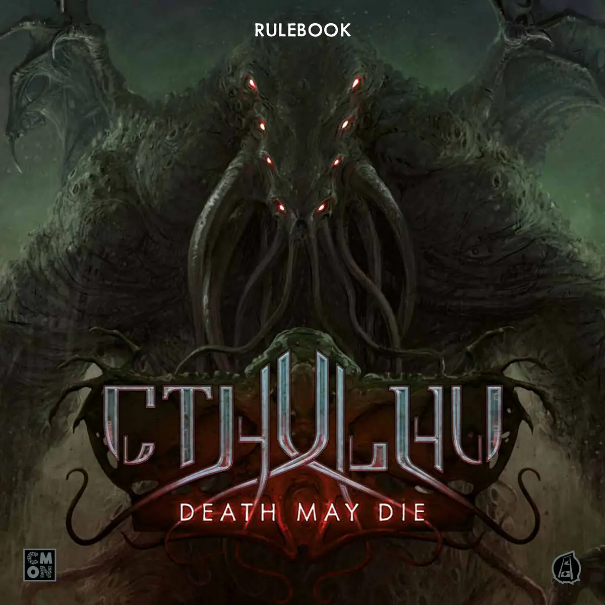
<figcaption>原版规则书 · 第 1 页（点击图片放大）</figcaption>
</figure>

<details class="mt-fold">
<summary>📝 第 1 页 AI 机翻对照（点击展开）</summary>
<div class="mt-body"><h2>规则书</h2></div>
</details>

<figure>
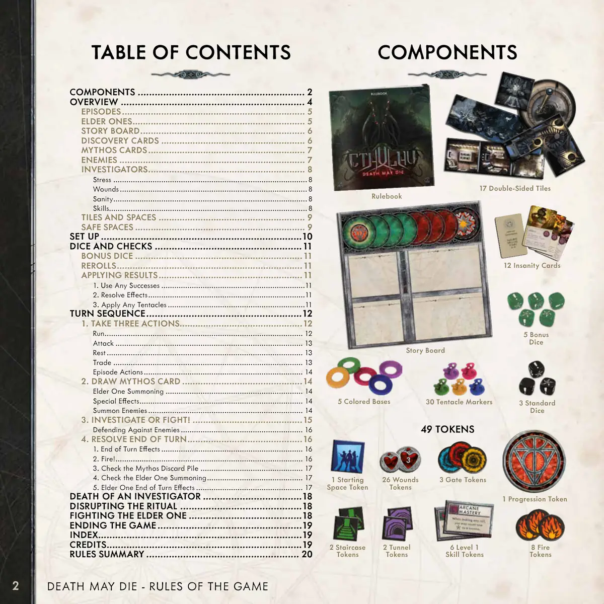
<figcaption>原版规则书 · 第 2 页（点击图片放大）</figcaption>
</figure>

<details class="mt-fold">
<summary>📝 第 2 页 AI 机翻对照（点击展开）</summary>
<div class="mt-body"><h2>死亡终将降临 - 游戏规则</h2>

<h2>目录</h2>

<h2>组件</h2>

<p>组件............................................................ 2</p>

<p>概述.................................................................. 4</p>

<p>章节....................................................................... 5</p>

<p>远古存在.................................................................. 5</p>

<p>故事板............................................................... 6</p>

<p>发现卡牌........................................................ 6</p>

<p>神话卡牌............................................................. 7</p>

<p>敌人........................................................................ 7</p>

<p>调查员............................................................ 8</p>

<p>压力..........................................................................................8</p>

<p>创伤.......................................................................................8</p>

<p>理智.........................................................................................8</p>

<p>技能...........................................................................................8</p>

<p>板块和区域......................................................... 9</p>

<p>安全区域.................................................................. 9</p>

<p>设置........................................................................10</p>

<h2>骰子和检定.....................................................11</h2>

<p>奖励骰子.................................................................11</p>

<p>重掷.......................................................................11</p>

<p>应用结果........................................................11</p>

<ol>
  <li>使用任何成功...................................................................11</li>
  <li>解决效果........................................................................11</li>
  <li>应用任何触手................................................................11</li>
</ol>

<h2>回合顺序.......................................................12</h2>

<h2>1. 执行三个行动...............................................12</h2>

<p>奔跑........................................................................................... 12</p>

<p>攻击....................................................................................... 13</p>

<p>休息........................................................................................... 13</p>

<p>交易........................................................................................ 13</p>

<p>章节行动.......................................................................... 14</p>

<h2>2. 抽取神话卡牌...............................................14</h2>

<p>召唤远古存在................................................................ 14</p>

<p>特殊效果........................................................................... 14</p>

<p>召唤敌人........................................................................ 14</p>

<h2>3. 调查或战斗！...........................................15</h2>

<p>防御敌人......................................................... 16</p>

<h2>4. 回合结束............................................16</h2>

<ol>
  <li>回合结束效果.................................................................. 16</li>
  <li>开火！...................................................................................... 16</li>
  <li>检查神话弃牌堆................................................ 17</li>
  <li>检查古神召唤................................................ 17</li>
  <li>古神回合结束效果................................................ 17</li>
</ol>

<h2>调查员之死....................................18</h2>

<h2>破坏仪式............................................18</h2>

<h2>与古神战斗.........................................18</h2>

<h2>游戏结束....................................................19</h2>

<p>索引........................................................................19</p>

<p>鸣谢.....................................................................19</p>

<p>规则摘要....................................................... 20</p>

<p>规则书</p>

<p>17 双面板块</p>

<p>12 疯狂卡牌</p>

<p>1 进度指示物</p>

<p>故事板</p>

<p>3 标准</p>

<p>骰子</p>

<p>5 奖励</p>

<p>骰子</p>

<p>30 触手指示物</p>

<p>5 彩色底座</p>

<p>2 楼梯</p>

<p>指示物</p>

<p>2 隧道</p>

<p>指示物</p>

<p>1 起点</p>

<p>空间指示物</p>

<p>6 1级</p>

<p>技能指示物</p>

<p>3 门户指示物</p>

<p>8 火焰</p>

<p>指示物</p>

<p>26 伤口</p>

<p>指示物</p>

<h2>49个指示物</h2></div>
</details>

<figure>
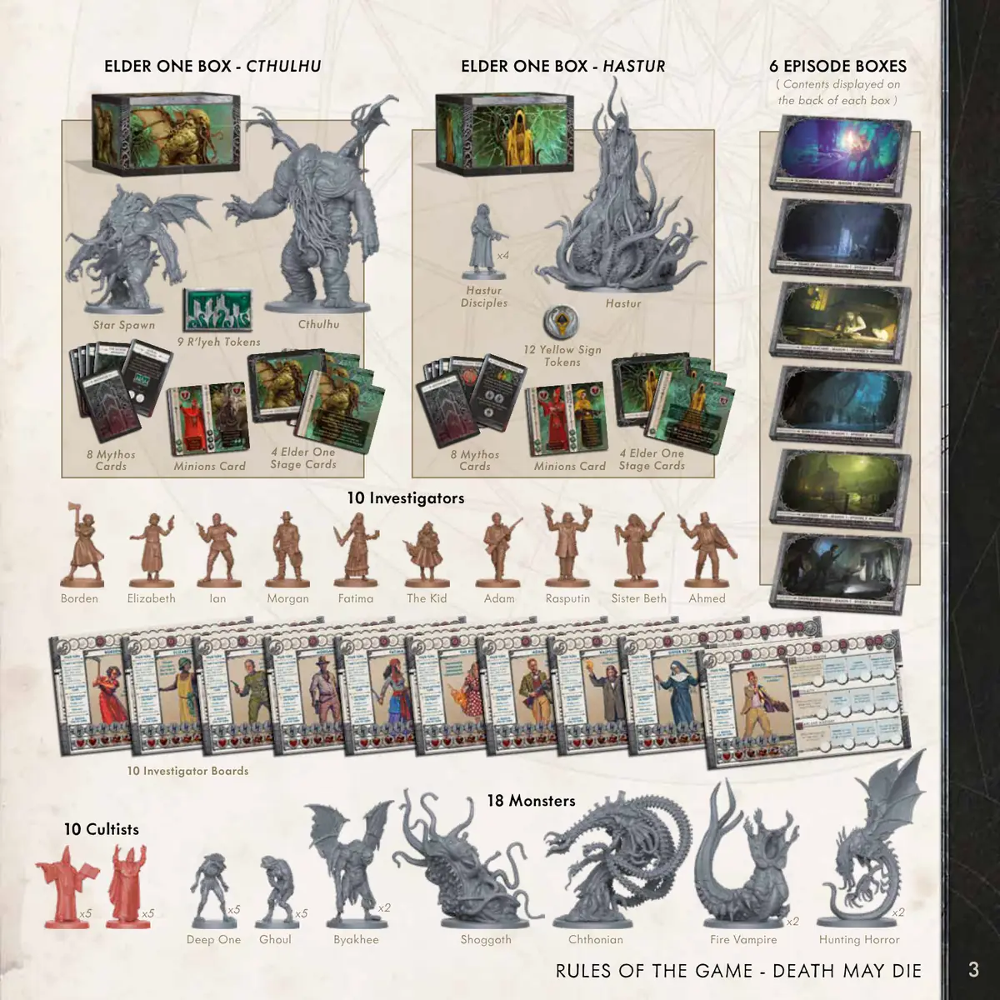
<figcaption>原版规则书 · 第 3 页（点击图片放大）</figcaption>
</figure>

<details class="mt-fold">
<summary>📝 第 3 页 AI 机翻对照（点击展开）</summary>
<div class="mt-body"><h2>游戏规则 - 死亡亦会死亡</h2>

<p>10 邪教徒</p>

<p>18 怪物</p>

<p>x5</p>

<p>x5</p>

<p>修格斯</p>

<p>克苏鲁的眷族</p>

<p>深潜者</p>

<p>x5</p>

<p>食尸鬼</p>

<p>x5</p>

<p>拜亚基</p>

<p>x2</p>

<p>狩猎恐怖</p>

<p>x2</p>

<p>火吸血鬼</p>

<p>x2</p>

<p>10 调查员</p>

<p>亚当</p>

<p>拉斯普京</p>

<p>贝丝修女</p>

<p>伊丽莎白</p>

<p>伊恩</p>

<p>摩根</p>

<p>博登</p>

<p>法蒂玛</p>

<p>小子</p>

<p>艾哈迈德</p>

<p>10 调查员版图</p>

<h2>6 个剧集盒</h2>

<p>（内容显示在</p>

<p>每个盒子的背面）</p>

<h2>旧日支配者盒 - 克苏鲁</h2>

<p>克苏鲁</p>

<p>星之眷族</p>

<p>8 张神话卡</p>

<p>4 张旧日支配者阶段卡</p>

<p>仆从卡</p>

<p>9 张"拉莱耶"指示物</p>

<p>8 张神话卡</p>

<p>4 张旧日支配者阶段卡</p>

<p>仆从卡</p>

<p>哈斯塔</p>

<p>12 张"黄印"指示物</p>

<h2>旧日支配者盒 - 哈斯塔</h2>

<p>哈斯塔</p>

<p>信徒</p>

<p>x4</p></div>
</details>

<figure>
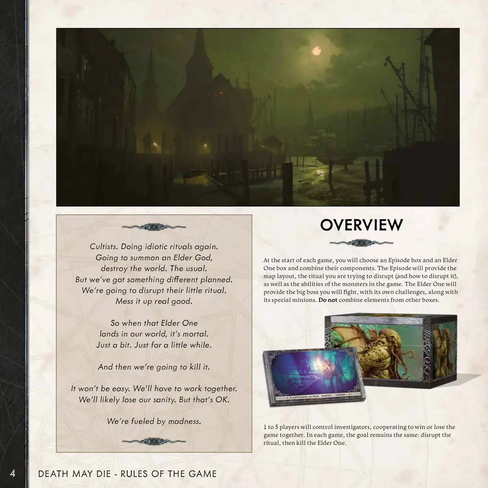
<figcaption>原版规则书 · 第 4 页（点击图片放大）</figcaption>
</figure>

<details class="mt-fold">
<summary>📝 第 4 页 AI 机翻对照（点击展开）</summary>
<div class="mt-body"><h2>死亡亦会死亡 - 游戏规则</h2>

<h2>概览</h2>

<p>每局游戏开始时，你将选择一个剧集盒和一个旧日支配者盒，并组合它们的组件。剧集将提供地图布局、你试图破坏的仪式（以及如何破坏它），以及游戏中怪物的能力。旧日支配者将提供你要对抗的大Boss，它有自己的挑战，以及其特殊的仆从。不要组合其他盒子中的元素。</p>

<p>1至5名玩家将控制调查员，合作一起赢或输游戏。在每局游戏中，目标保持不变：破坏仪式，然后杀死旧日支配者。</p>

<p>邪教徒。又在做愚蠢的仪式了。</p>

<p>要召唤一位古神，</p>

<p>毁灭世界。老样子。</p>

<p>但我们有不同的计划。</p>

<p>我们要破坏他们的小仪式。</p>

<p>把它彻底搞砸。</p>

<p>所以当那位旧日支配者</p>

<p>降临我们的世界时，它会变得凡人。</p>

<p>只是有点。只是暂时的。</p>

<p>然后我们就要杀死它。</p>

<p>这不会容易。我们必须合作。</p>

<p>我们可能会失去理智。但没关系。</p>

<p>我们被疯狂所驱动。</p></div>
</details>

<figure>
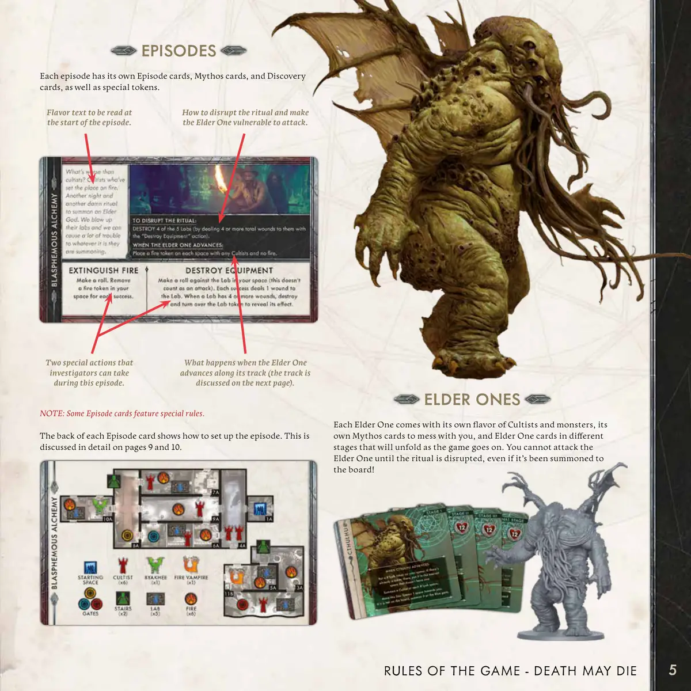
<figcaption>原版规则书 · 第 5 页（点击图片放大）</figcaption>
</figure>

<details class="mt-fold">
<summary>📝 第 5 页 AI 机翻对照（点击展开）</summary>
<div class="mt-body"><h2>游戏规则 - 死亡亦会死亡</h2>

<h2>剧集</h2>

<p>每个剧集都有自己的剧集卡、神话卡和发现卡，以及特殊的指示物。</p>

<p>注意：一些剧集卡有特殊规则。</p>

<p>每张剧集卡的背面显示了如何设置该剧集。这在第9页和第10页有详细讨论。</p>

<h2>旧日支配者</h2>

<p>每个旧日支配者都有自己风格的邪教徒和怪物，有用来干扰你的神话卡，以及随着游戏进程展开的不同阶段的旧日支配者卡。即使旧日支配者已经被召唤到版图上，在仪式被破坏之前，你不能攻击它！</p>

<p>在剧集开始时</p>

<p>要阅读的背景文本。</p>

<p>调查员在本剧集中</p>

<p>可以采取的两个特殊行动。</p>

<p>如何破坏仪式并使</p>

<p>旧日支配者变得易受攻击。</p>

<p>当旧日支配者沿着其轨道前进时</p>

<p>会发生什么（轨道在下一页讨论）。</p></div>
</details>

<figure>
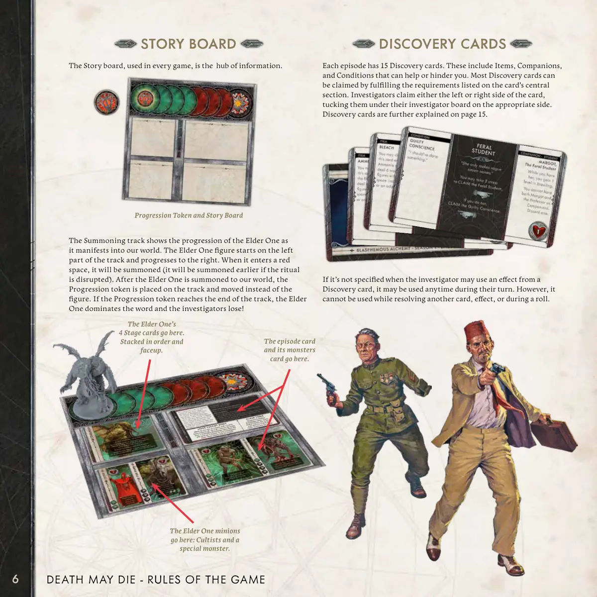
<figcaption>原版规则书 · 第 6 页（点击图片放大）</figcaption>
</figure>

<details class="mt-fold">
<summary>📝 第 6 页 AI 机翻对照（点击展开）</summary>
<div class="mt-body"><h2>死亡亦会死亡 - 游戏规则</h2>

<h2>故事板块</h2>

<p>故事板块在每局游戏中都会使用，是信息的中心。</p>

<p>进度指示物和故事板块</p>

<p>召唤轨迹显示了远古神祇（Elder One）显现到我们世界的过程。远古神祇的棋子从轨迹的左侧开始，向右前进。当它进入红色格子时，它将被召唤（如果仪式被打断，它会更早被召唤）。远古神祇被召唤到我们的世界后，将进度指示物放置在轨迹上并移动它，代替棋子移动。如果进度指示物到达轨迹的终点，远古神祇将支配世界，调查员失败！</p>

<h2>发现卡</h2>

<p>每个章节有15张发现卡。这些包括物品、同伴和可能帮助或阻碍你的状况。大多数发现卡可以通过满足卡片中央部分列出的要求来获取。调查员可以选择卡片的左侧或右侧，将它们塞入调查员板相应的下方。发现卡在第15页有进一步说明。</p>

<p>如果未指明调查员何时可以使用发现卡的效果，可以在他们的回合期间的任何时间使用。但是，在解决其他卡牌、效果或进行掷骰子时不能使用。</p>

<p>远古神祇的爪牙</p>

<p>放在这里：邪教徒和一个</p>

<p>特殊怪物。</p>

<p>远古神祇的</p>

<p>4张阶段卡放在这里。</p>

<p>按顺序堆叠并正面朝上。</p>

<p>章节卡及其</p>

<p>怪物卡放在这里。</p></div>
</details>

<figure>
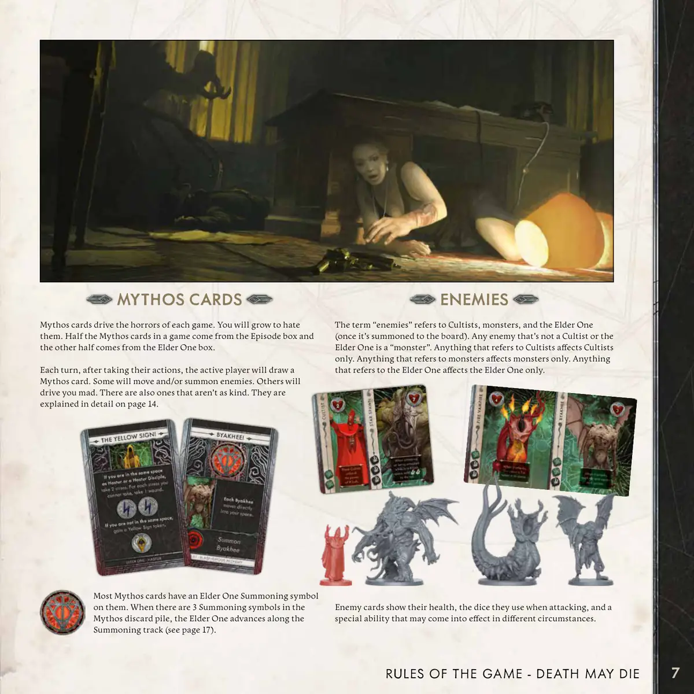
<figcaption>原版规则书 · 第 7 页（点击图片放大）</figcaption>
</figure>

<details class="mt-fold">
<summary>📝 第 7 页 AI 机翻对照（点击展开）</summary>
<div class="mt-body"><h2>游戏规则 - 死亡亦会死亡</h2>

<h2>神话卡</h2>

<p>神话卡驱动每局游戏的恐怖。你会逐渐憎恨它们。游戏中一半的神话卡来自章节盒，另一半来自远古神祇盒。</p>

<p>每个回合，在执行完行动后，当前玩家将抽取一张神话卡。有些会移动和/或召唤敌人。有些会让你疯狂。还有一些不那么友好的。它们在第14页有详细说明。</p>

<p>大多数神话卡上都有一个远古神祇召唤符号。当神话弃牌堆中有3个召唤符号时，远古神祇沿着召唤轨迹前进（参见第17页）。</p>

<h2>敌人</h2>

<p>"敌人"一词指的是邪教徒、怪物和远古神祇（一旦它被召唤到版图上）。任何不是邪教徒或远古神祇的敌人都是"怪物"。任何涉及邪教徒的内容只影响邪教徒。任何涉及怪物的内容只影响怪物。任何涉及远古神祇的内容只影响远古神祇。</p>

<p>敌人卡显示了他们的生命值、攻击时使用的骰子，以及在特定情况下可能生效的特殊能力。</p></div>
</details>

<figure>
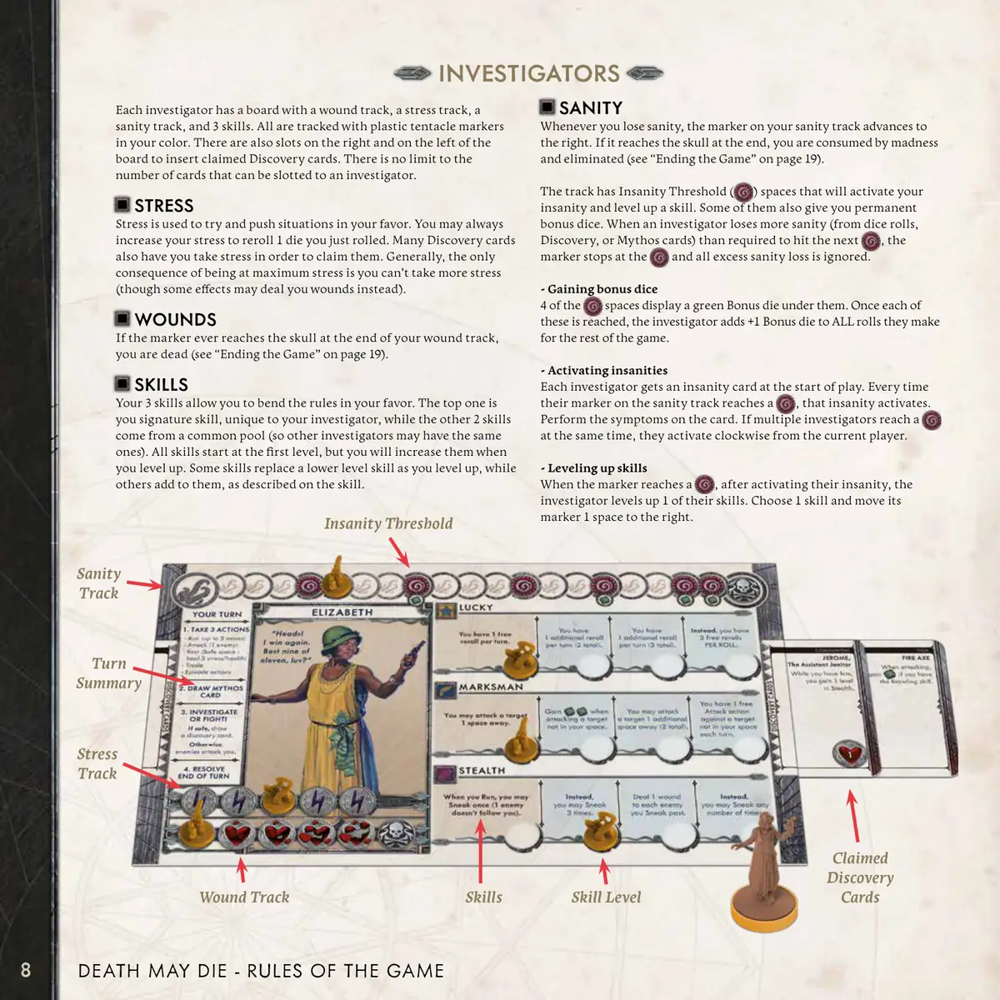
<figcaption>原版规则书 · 第 8 页（点击图片放大）</figcaption>
</figure>

<details class="mt-fold">
<summary>📝 第 8 页 AI 机翻对照（点击展开）</summary>
<div class="mt-body"><h2>死亡亦将逝 - 游戏规则</h2>

<h2>调查员</h2>

<p>每位调查员有一块板块，上面有创伤轨道、压力轨道、理智轨道和3项技能。所有这些都用你颜色的塑料触手指示物来追踪。板块的左右两侧也有插槽，用于插入已获取的发现卡。可以插入调查员的卡片数量没有限制。</p>

<h2>压力</h2>

<p>压力用于尝试将局势推向对你有利的方向。你总是可以增加你的压力来重新投掷你刚刚投出的1个骰子。许多发现卡也会让你承受压力才能获取它们。通常，处于最大压力的唯一后果是你不能再承受更多压力（尽管某些效果可能会对你造成创伤）。</p>

<h2>创伤</h2>

<p>如果指示器 ever 到达你创伤轨道末端的骷髅，你就死亡（参见第19页"游戏结束"）。</p>

<h2>技能</h2>

<p>你的3项技能允许你为将规则向有利于你的方向弯曲。最上面的是你的签名技能，是调查员独有的，而另外2项技能来自公共池（所以其他调查员可能有相同的技能）。所有技能都从第一级开始，但当你升级时会提升它们。根据技能描述，有些技能在你升级时会替换较低级别的技能，而其他技能则会增加它们。</p>

<h2>理智</h2>

<p>每当失去理智时，你理智轨道上的指示器会向右前进。如果它到达末端的骷髅，你就会被疯狂吞噬并被淘汰（参见第19页"游戏结束"）。</p>

<p>轨道上有疯狂阈值（</p>

<p>）空间，这些空间会激活你的疯狂并提升一项技能。其中一些还会给你永久奖励骰子。当调查员失去的理智（来自骰子投掷、发现卡或神话卡）超过到达下一个</p>

<p>所需时，指示器会停在</p>

<p>，所有多余的理智损失都会被忽略。</p>

<ul>
  <li>获得奖励骰子</li>
</ul>

<p>4个</p>

<p>空间下方显示绿色奖励骰子。一旦到达这些空间中的每一个，调查员就会为他们在游戏中所有投掷增加+1奖励骰子。</p>

<ul>
  <li>激活疯狂</li>
</ul>

<p>每位调查员在游戏开始时获得一张疯狂卡。每当他们理智轨道上的指示器到达</p>

<p>时，那种疯狂就会激活。执行卡片上的症状。如果多个调查员同时到达</p>

<p>，他们会从当前玩家开始顺时针激活。</p>

<ul>
  <li>技能升级</li>
</ul>

<p>当指示器到达</p>

<p>时，在激活他们的疯狂后，调查员会提升他们的一项技能。选择1项技能并将其指示器向右移动1格。</p>

<p>理智</p>

<p>轨道</p>

<p>回合</p>

<p>总结</p>

<p>创伤</p>

<p>轨道</p>

<p>压力</p>

<p>轨道</p>

<p>技能</p>

<p>技能等级</p>

<p>已获取的</p>

<p>发现卡</p>

<p>疯狂阈值</p></div>
</details>

<figure>
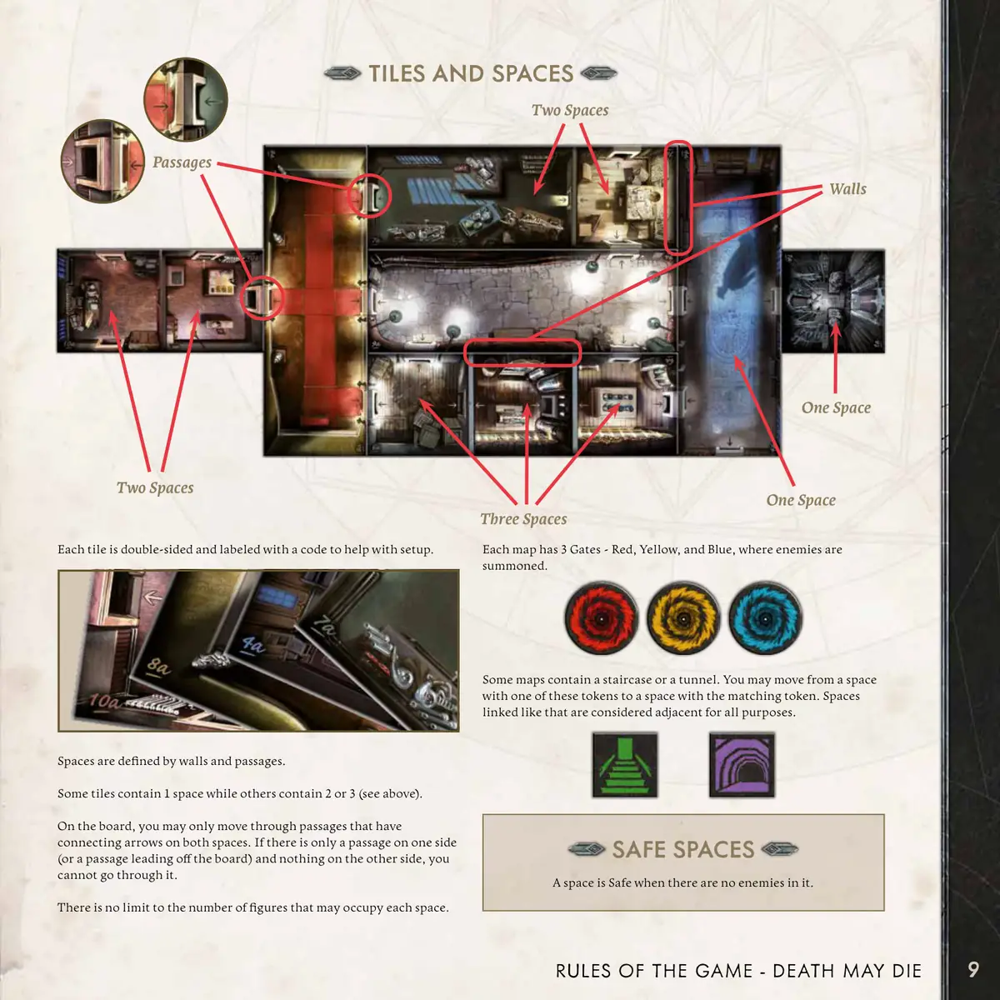
<figcaption>原版规则书 · 第 9 页（点击图片放大）</figcaption>
</figure>

<details class="mt-fold">
<summary>📝 第 9 页 AI 机翻对照（点击展开）</summary>
<div class="mt-body"><h2>游戏规则 - 死亡亦会逝去</h2>

<h2>板块与区域</h2>

<p>每个板块都是双面的，并标注有代码以帮助设置。</p>

<p>区域由墙壁和通道定义。</p>

<p>一些板块包含1个区域，而其他板块包含2个或3个区域（见上图）。</p>

<p>在版图上，你只能通过两个区域都有连接箭头的通道移动。如果只有一侧有通道（或通出版图的通道）而另一侧什么都没有，你就无法通过它。</p>

<p>每个区域可容纳的棋子数量没有限制。</p>

<p>每张地图有3个门 - 红色、黄色和蓝色，敌人会在这些位置被召唤。</p>

<p>一些地图包含楼梯或隧道。你可以从一个带有这些指示物之一的区域移动到带有匹配指示物的区域。这样连接的区域被视为所有目的上的相邻区域。</p>

<h2>安全区域</h2>

<p>当区域内没有敌人时，该区域就是安全的。</p>

<p>墙壁</p>

<p>通道</p>

<p>一个区域</p>

<p>两个区域</p>

<p>两个区域</p>

<p>三个区域</p>

<p>一个区域</p></div>
</details>

<figure>
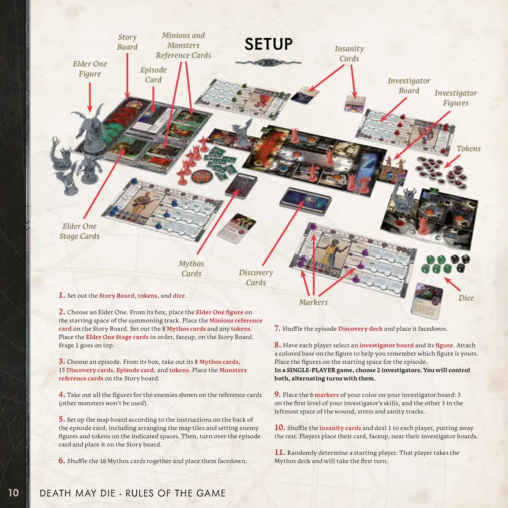
<figcaption>原版规则书 · 第 10 页（点击图片放大）</figcaption>
</figure>

<details class="mt-fold">
<summary>📝 第 10 页 AI 机翻对照（点击展开）</summary>
<div class="mt-body"><h2>死亡亦会死亡 - 游戏规则</h2>

<h2>设置</h2>

<ol>
  <li>展开故事板、指示物和骰子。</li>
  <li>选择一位上古者。从其盒中，将上古者棋子放置在召唤轨道的起始格上。将仆从参考卡放在故事板上。拿出8张神话卡牌和任何指示物。将上古者阶段卡牌按顺序正面朝上放在故事板上。阶段1放在最上面。</li>
  <li>选择一集。从其盒中取出该集的8张神话卡牌、15张发现卡牌、集卡和指示物。将怪物参考卡放在故事板上。</li>
  <li>取出参考卡上所示敌人的所有棋子（其他怪物不会使用）。</li>
  <li>根据集卡背面的说明设置地图板，包括排列地图板块并在指定格上放置敌人棋子和指示物。然后将集卡翻面并放在故事板上。</li>
  <li>将16张神话卡牌洗混并正面朝下放置。</li>
  <li>洗混该集的发现牌组并正面朝下放置。</li>
  <li>让每位玩家选择一张调查员板及其棋子。在棋子上 attach 一个彩色底座，帮助你记住哪个棋子是你的。将棋子放在该集的起始格上。</li>
</ol>

<p>在单人游戏中，选择2名调查员。你将控制他们，轮流进行回合。</p>

<ol>
  <li>将你的6个颜色的指示物放在你的调查员板上：3个放在你调查员技能的第一级，另外3个放在伤害、压力和理智轨道的最左侧格。</li>
  <li>洗混疯狂卡牌并给每位玩家发1张，剩下的收起来。玩家将他们的卡牌正面朝上放在调查员板附近。</li>
  <li>随机决定起始玩家。该玩家拿取神话牌组并将进行第一回合。</li>
</ol>

<p>疯狂卡牌</p>

<p>指示物</p>

<p>调查员板</p>

<p>调查员棋子</p>

<p>集卡</p>

<p>发现卡牌</p>

<p>故事板</p>

<p>神话卡牌</p>

<p>仆从和怪物参考卡</p>

<p>上古者阶段卡牌</p>

<p>指示物</p>

<p>骰子</p>

<p>上古者棋子</p></div>
</details>

<figure>
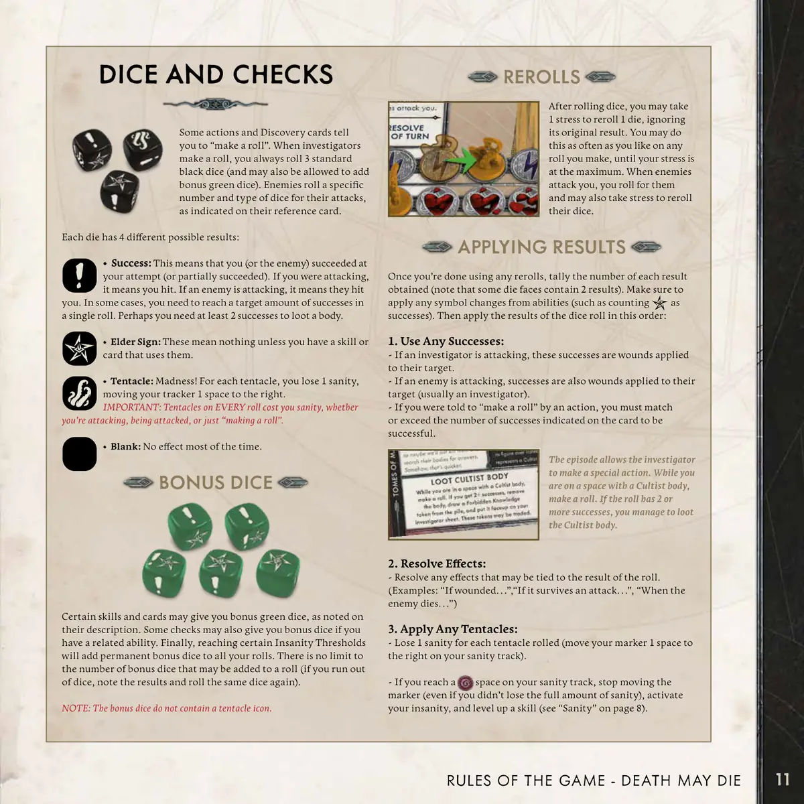
<figcaption>原版规则书 · 第 11 页（点击图片放大）</figcaption>
</figure>

<details class="mt-fold">
<summary>📝 第 11 页 AI 机翻对照（点击展开）</summary>
<div class="mt-body"><h2>游戏规则 - 死亡亦会死亡</h2>

<h2>骰子与检定</h2>

<p>某些行动和发现卡牌会指示你"进行一次掷骰"。当调查员进行掷骰时，你总是掷3个标准黑色骰子（并且可能还被允许添加奖励绿色骰子）。敌人根据其参考卡上所示，为他们的攻击掷特定数量和类型的骰子。</p>

<p>每个骰子有4种不同的可能结果：</p>

<p>• 成功：这意味着你（或敌人）尝试成功（或部分成功）。如果你在攻击，这意味着你命中。如果敌人在攻击，这意味着他们命中了你。在某些情况下，你需要在单次掷骰中获得至少目标数量的成功。例如，你可能需要至少2个成功才能搜刮尸体。</p>

<p>• 古神符：这些符号没有意义，除非你有使用它们的技能或卡牌。</p>

<p>• 触手：疯狂！每个触手会让你失去1点理智，将你的指示物向右移动1格。</p>

<p>重要：每次掷骰上的触手都会消耗你的理智，无论你是在攻击、被攻击，还是仅仅"进行掷骰"。</p>

<p>• 空白：大多数情况下没有效果。</p>

<h2>奖励骰子</h2>

<p>某些技能和卡牌可能会给你奖励绿色骰子，如它们的描述中所述。如果你有相关能力，某些检定也可能给你奖励骰子。最后，达到特定的疯狂阈值将为你的所有掷骰添加永久奖励骰子。可以添加到一次掷骰中的奖励骰子数量没有限制（如果你用完了骰子，记录结果并再次掷相同的骰子）。</p>

<p>注意：奖励骰子不包含触手图标。</p>

<h2>重掷</h2>

<p>掷骰后，你可以消耗1点压力来重掷1个骰子，忽略其原始结果。你可以对你进行的任何掷骰随意这样做，直到你的压力达到最大值。当敌人攻击你时，你为他们掷骰，也可以消耗压力来重掷他们的骰子。</p>

<h2>应用结果</h2>

<p>一旦你完成了任何重掷，统计每种结果的数量（注意一些骰面包含2个结果）。确保应用任何能力带来的符号变化（例如将触手计为成功）。然后按以下顺序应用掷骰结果：</p>

<h3>1. 使用任何成功：</h3>

<ul>
  <li>如果调查员在攻击，这些成功是施加到他们目标上的伤害。</li>
  <li>如果敌人在攻击，成功也是施加到他们目标（通常是调查员）上的伤害。</li>
  <li>如果行动指示你"进行一次掷骰"，你必须匹配或超过卡牌上指示的成功数量才能成功。</li>
</ul>

<p>该章节允许调查员进行特殊行动。当你在一个有邪教徒尸体的格子上时，进行一次掷骰。如果掷骰有2个或更多成功，你成功搜刮了邪教徒尸体。</p>

<h3>2. 解决效果：</h3>

<ul>
  <li>解决可能与掷骰结果相关的任何效果。</li>
</ul>

<h3>3. 应用任何触手：</h3>

<ul>
  <li>每掷出一个触手失去1点理智（在你的理智轨道上将你的指示物向右移动1格）。</li>
  <li>如果你到达理智轨道上的一个格，停止移动指示物（即使你没有失去全部理智点数），激活你的疯狂，并提升一项技能（参见第8页的"理智"）。</li>
</ul></div>
</details>

<figure>
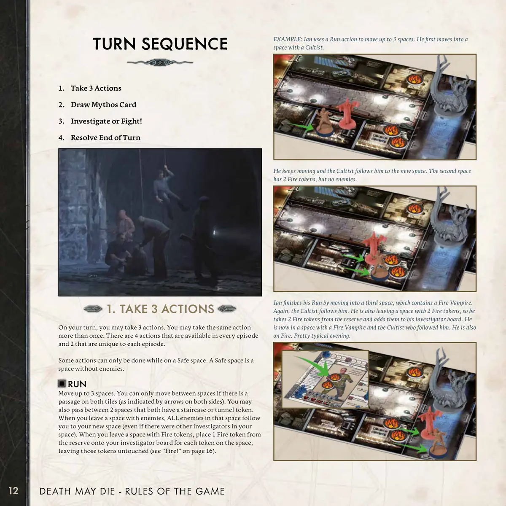
<figcaption>原版规则书 · 第 12 页（点击图片放大）</figcaption>
</figure>

<details class="mt-fold">
<summary>📝 第 12 页 AI 机翻对照（点击展开）</summary>
<div class="mt-body"><h2>DEATH MAY DIE - 游戏规则</h2>

<h2>回合顺序</h2>

<ol>
  <li>执行3个行动</li>
</ol>

<h3>2. 摇出神话卡牌</h3>

<ol>
  <li>调查或战斗！</li>
</ol>

<h3>4. 结束回合</h3>

<h2>1. 执行3个行动</h2>

<p>在你的回合，你可以执行3个行动。你可以多次执行相同的行动。每个章节都有4个可用行动，另外2个行动是每个章节特有的。</p>

<p>有些行动只能在安全格上执行。安全格是没有敌人的格。</p>

<h2>奔跑</h2>

<p>移动最多3个格。只有当两个板块都有通道时（如两侧箭头所示），你才能在格之间移动。你也可以在两个都有楼梯或隧道指示物的格之间通过。</p>

<p>当你离开有敌人的格时，该格中的所有敌人都会跟随你到你的新格（即使你的格中还有其他调查员）。当你离开有火焰指示物的格时，从储备中为该格上的每个指示物在你的调查员版图上放置1个火焰指示物，这些指示物保持不变（参见第16页的"火灾！"）。</p>

<p>示例：伊恩使用奔跑行动移动最多3个格。他首先移动到一个有邪教徒的格。他继续移动，邪教徒跟随他到新格。第二个格有2个火焰指示物，但没有敌人。伊恩通过移动到第三个格完成他的奔跑，该格包含一个火焰吸血鬼。再次，邪教徒跟随他。他也在离开一个有2个火焰指示物的格，所以他从储备中取出2个火焰指示物并添加到他的调查员版图上。他现在在一个有火焰吸血鬼和跟随他的邪教徒的格中。他也处于着火状态。相当典型的夜晚。</p></div>
</details>

<figure>
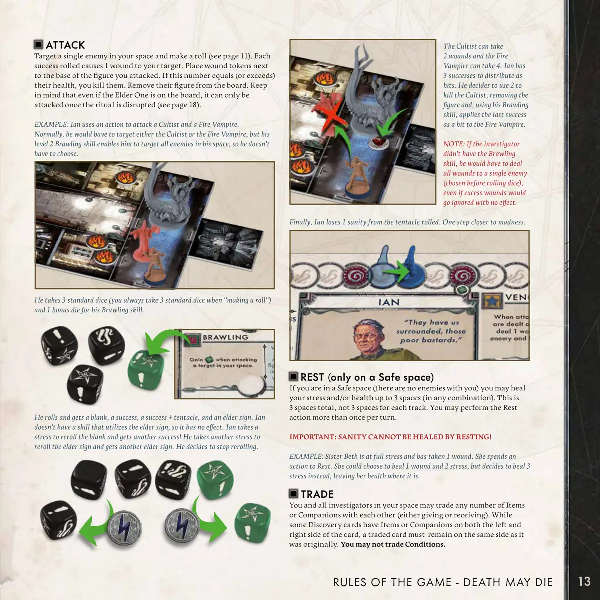
<figcaption>原版规则书 · 第 13 页（点击图片放大）</figcaption>
</figure>

<details class="mt-fold">
<summary>📝 第 13 页 AI 机翻对照（点击展开）</summary>
<div class="mt-body"><h2>游戏规则 - 死亡亦可死 (DEATH MAY DIE)</h2>

<h2>攻击 (ATTACK)</h2>

<p>锁定你所在空间内的单个敌人并进行一次掷骰（见第11页）。每次掷出的成功都会对目标造成1点伤害。在你攻击的模型底座旁放置伤害指示物。如果这个数字等于（或超过）他们的生命值，你就杀死了他们。将他们的模型从版图上移除。请记住，即使上古者（Elder One）在版图上，也只有在被仪式打断后才能被攻击（见第18页）。</p>

<p>示例：伊恩（Ian）使用一个行动来攻击一个邪教徒（Cultist）和一个火系吸血鬼（Fire Vampire）。通常情况下，他必须选择攻击邪教徒或火系吸血鬼中的一个，但他的2级格斗（Brawling）技能使他能够锁定所在空间内的所有敌人，因此他不必选择。</p>

<p>他拿了3个标准骰子（当你"进行掷骰"时总是拿3个标准骰子）和1个他的格斗技能的奖励骰子。</p>

<p>他掷骰得到一个空白、一个成功、一个成功+触手和一个远古符号（elder sign）。伊恩没有使用远古符号的技能，所以它没有效果。伊恩承受1点压力来重掷空白骰子，又得到了一个成功！他再承受1点压力来重掷远古符号，又得到了一个远古符号。他决定停止重掷。</p>

<p>邪教徒可以承受2点伤害，火系吸血鬼可以承受4点伤害。伊恩有3个成功可以分配为打击。他决定使用2个来杀死邪教徒，移除其模型，并使用他的格斗技能，将最后一个成功作为一次打击应用到火系吸血鬼身上。</p>

<p>注意：如果调查员没有格斗技能，他必须将所有伤害施加给单个敌人（在掷骰前选择），即使多余的伤害会被忽略且无效。</p>

<p>最后，伊恩因为掷出的触手而失去1点理智。离疯狂又近了一步。</p>

<p>休息（仅在安全空间）</p>

<p>如果你在安全空间（没有敌人与你同在），你可以恢复最多3点的压力和/或生命值（任意组合）。总共是3点，而不是每条轨道3点。你每回合可以执行多次休息行动。</p>

<p>重要：理智不能通过休息恢复！</p>

<p>示例：贝丝修女（Sister Beth）压力值已满，并且承受了1点伤害。她花费一个行动来休息。她可以选择恢复1点伤害和2点压力，但她决定恢复3点压力，保持她的生命值不变。</p>

<h2>交易 (TRADE)</h2>

<p>你和所在空间内的所有调查员可以相互交易任意数量的物品（Items）或同伴（Companions）（可以是给予或接收）。虽然一些发现卡（Discovery cards）的左右两侧都有物品或同伴，但被交易的卡必须保持在原来的同一侧。你不能交易状态（Conditions）。</p></div>
</details>

<figure>
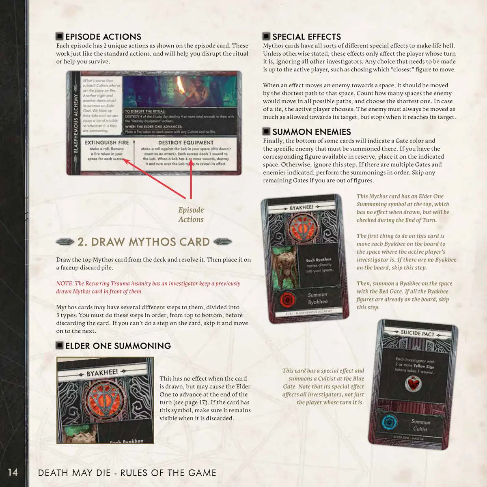
<figcaption>原版规则书 · 第 14 页（点击图片放大）</figcaption>
</figure>

<details class="mt-fold">
<summary>📝 第 14 页 AI 机翻对照（点击展开）</summary>
<div class="mt-body"><h2>死亡终将降临 - 游戏规则</h2>

<h2>剧集行动</h2>

<p>每个剧集有2个独特行动，如剧集卡所示。这些行动与标准行动完全一样，将帮助你破坏仪式或帮助你生存。</p>

<h2>2. 摸取神话卡</h2>

<p>从牌库顶摸取一张神话卡并结算它。然后将它放置到一张正面朝上的弃牌堆上。</p>

<p>注意：反复创伤精神失常会让一位调查者保留一张先前摸取的神话卡在面前。</p>

<p>神话卡可能有几个不同的步骤，分为3种类型。你必须按从上到下的顺序执行这些步骤，然后才能弃掉这张卡。如果你无法执行卡上的某个步骤，则跳过它并继续下一个。</p>

<h2>古神召唤</h2>

<p>这张卡被摸取时没有效果，但可能导致古神在回合结束时前进（见第17页）。如果卡上有这个符号，确保它在被弃置时仍然可见。</p>

<h2>特殊效果</h2>

<p>神话卡有各种不同的特殊效果，让生活变得如同地狱。除非另有说明，这些效果只影响当前回合的玩家，忽略所有其他调查者。任何需要做出的选择都由当前玩家决定，例如选择移动哪个"最近"的棋子。</p>

<p>当一个效果将敌人向某个区域移动时，应通过最短路径移动到该区域。计算敌人在所有可能路径中会移动多少格，并选择最短的一条。如果平局，由当前玩家选择。敌人必须始终被允许尽可能多地朝其目标移动，但当到达目标时停止。</p>

<h2>召唤敌人</h2>

<p>最后，一些卡片的底部会标示一扇传送门颜色和必须在那里召唤的特定敌人。如果你在预备区中有对应的棋子，则将其放置在指定的区域上。否则，跳过此步骤。如果标示了多个传送门和敌人，按顺序执行召唤。如果你没有棋子了，则跳过剩余的传送门。</p>

<p>这张神话卡顶部有一个古神召唤符号，摸取时没有效果，但在回合结束时会被检查。</p>

<p>这张卡上要做的第一件事是将棋盘上的每个拜亚基移动到当前玩家调查者所在的区域。如果棋盘上没有拜亚基，则跳过此步骤。</p>

<p>然后在红色传送门所在的区域召唤一个拜亚基。如果所有拜亚基棋子已经在棋盘上，则跳过此步骤。</p>

<p>这张卡有一个特殊效果，在蓝色传送门召唤一个邪教徒。注意，它的特殊效果影响所有调查者，而不仅仅是当前回合的玩家。</p>

<p>剧集</p>

<p>行动</p></div>
</details>

<figure>
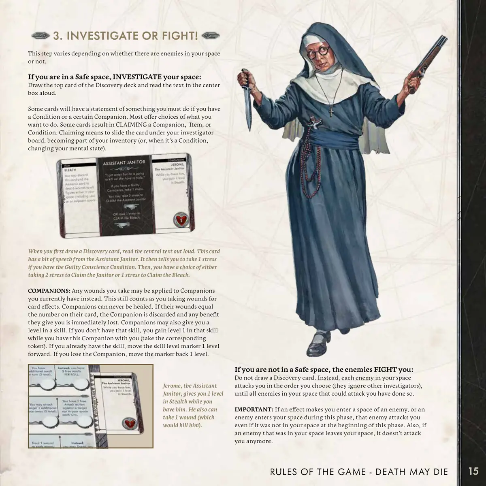
<figcaption>原版规则书 · 第 15 页（点击图片放大）</figcaption>
</figure>

<details class="mt-fold">
<summary>📝 第 15 页 AI 机翻对照（点击展开）</summary>
<div class="mt-body"><h2>游戏规则 - 死亡亦会死亡</h2>

<h3>3. 调查或战斗！</h3>

<p>这一步根据你所在区域是否有敌人而有所不同。</p>

<p>如果你在安全区域，调查你的区域：</p>

<p>从发现牌库顶抽一张牌，大声朗读中间框内的文字。</p>

<p>有些牌会有一段说明，如果你有某种状态或特定同伴，你必须做什么。大多数牌提供你想要做什么的选择。有些牌会导致你获得一个同伴、物品或状态。获得意味着将牌滑到你的调查员板下方，成为你库存的一部分（或者，当它是状态时，改变你的精神状态）。</p>

<p>同伴：你受到的任何伤害都可以应用于你当前拥有的同伴身上。这仍然算作你受到伤害以触发牌效果。同伴永远无法被治愈。如果他们的伤害数量等于他们牌上的数字，该同伴被弃置，他们给你的任何好处立即失去。同伴也可能给你提供一项技能的等级。如果你没有这项技能，当你拥有这个同伴时，你获得该技能1级（拿取相应的指示物）。如果你已经有这项技能，将技能等级指示物向前移动1级。如果你失去该同伴，将指示物向后移动1级。</p>

<p>如果你不在安全区域，敌人会攻击你：</p>

<p>不要抽发现牌。相反，你所在区域中的每个敌人按照你选择的顺序攻击你（他们忽略其他调查员），直到所有能攻击你的敌人都已完成攻击。</p>

<p>重要提示：如果某个效果使你进入一个敌人的区域，或者一个敌人在此阶段进入你的区域，即使该敌人在此阶段开始时不在你的区域，它也会攻击你。此外，如果一个原本在你所在区域的敌人离开了你的区域，它就不再攻击你。</p>

<p>当你第一次抽到发现牌时，大声朗读中间文字。这张牌有一些来自助理看门人的话语。然后它告诉你，如果你有"内疚良心"状态，就要承受1点压力。接着，你可以选择承受2点压力来获得看门人，或者承受1点压力来获得漂白剂。</p>

<p>助理看门人杰罗姆，在你拥有他时，给你提供1级潜行能力。他也可以承受1点伤害（这会杀死他）。</p></div>
</details>

<figure>
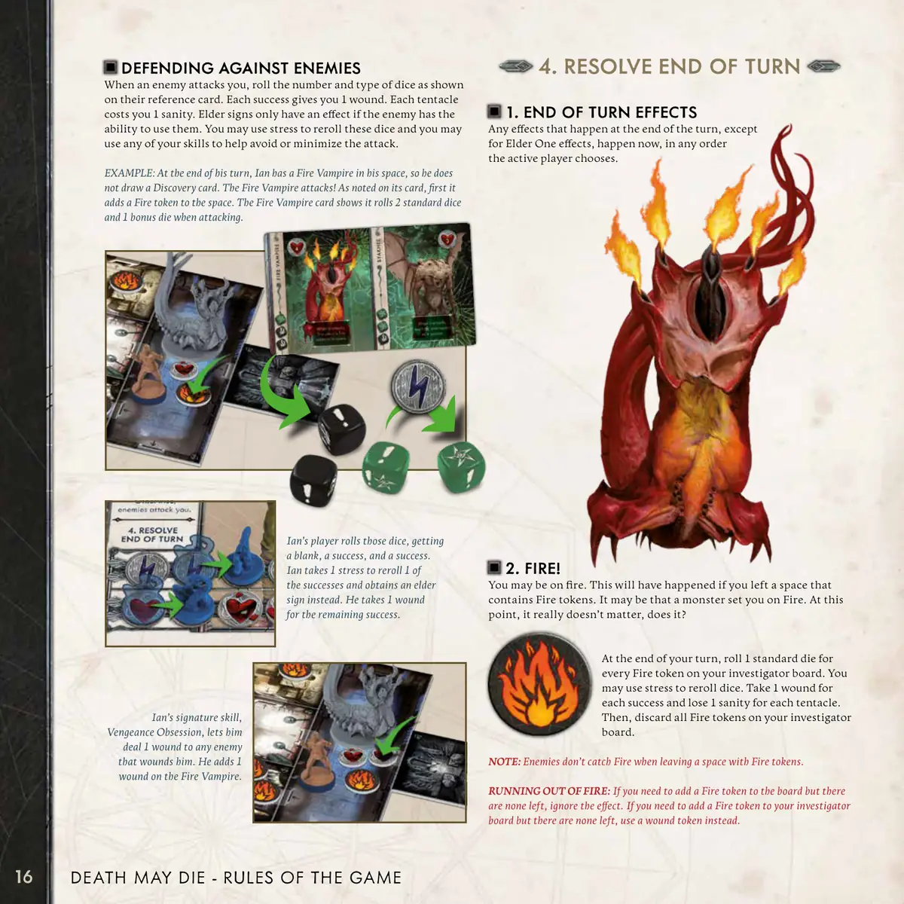
<figcaption>原版规则书 · 第 16 页（点击图片放大）</figcaption>
</figure>

<details class="mt-fold">
<summary>📝 第 16 页 AI 机翻对照（点击展开）</summary>
<div class="mt-body"><h2>死亡亦将逝 - 游戏规则</h2>

<h2>抵抗敌人</h2>

<p>当敌人攻击你时，掷出其参考卡上所示数量和类型的骰子。每次成功给你造成1点创伤。每条触角使你失去1点理智。古印符仅在敌人有使用能力时才有效。你可以使用压力值来重掷这些骰子，并且可以使用你任何的技能来帮助避免或最小化攻击。</p>

<p>示例：在他的回合结束时，伊恩所在空间有一只火系吸血鬼，因此他没有抽取发现卡。火系吸血鬼发动攻击！如其卡上所述，首先它在空间上添加一个火焰指示物。火系吸血鬼卡显示它在攻击时掷2个标准骰子和1个奖励骰子。</p>

<p>伊恩的玩家掷出这些骰子，得到</p>

<p>一个空白面、一个成功和一个成功。</p>

<p>伊恩花费1点压力值重掷其中1个</p>

<p>成功结果，并获得一个古印符。他</p>

<p>为剩下的成功结果承受1点创伤。</p>

<p>伊恩的招牌技能，</p>

<p>复仇执念，让他能对任何</p>

<p>造成他创伤的敌人造成1点创伤。</p>

<p>他对火系吸血鬼添加了1点创伤。</p>

<h2>4. 解决回合结束</h2>

<h2>1. 回合结束效果</h2>

<p>任何在回合结束时发生的效果，除了</p>

<p>古一效果，现在发生，按活跃玩家选择的</p>

<p>任何顺序。</p>

<ol>
  <li>着火了！</li>
</ol>

<p>你可能着火了。如果你离开包含火焰指示物的空间，就会发生这种情况。可能是怪物让你着火了。此时，这真的重要吗，不是吗？</p>

<p>在你的回合结束时，为你的调查员版图上的每个火焰指示物掷1个标准骰子。你可以使用压力值来重掷骰子。每个成功造成1点创伤，每个触角失去1点理智。</p>

<p>然后，弃掉你调查员版图上的所有火焰指示物。</p>

<p>注意：当敌人离开带有火焰指示物的空间时，不会着火。</p>

<p>火焰用尽：如果你需要向版图添加一个火焰指示物但没有剩余的，忽略该效果。如果你需要向你的调查员版图添加一个火焰指示物但没有剩余的，则使用创伤指示物代替。</p></div>
</details>

<figure>
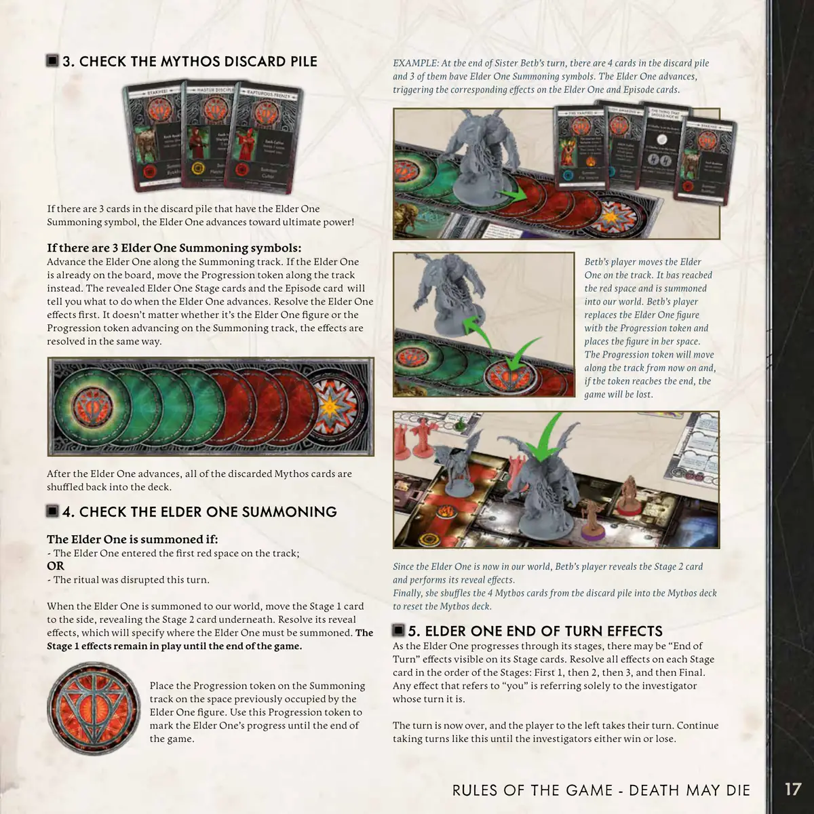
<figcaption>原版规则书 · 第 17 页（点击图片放大）</figcaption>
</figure>

<details class="mt-fold">
<summary>📝 第 17 页 AI 机翻对照（点击展开）</summary>
<div class="mt-body"><h2>游戏规则 - 死亡亦会死亡</h2>

<h2>3. 检查神话弃牌堆</h2>

<p>如果弃牌堆中有3张带有古神召唤符号的卡牌，古神将迈向终极力量！</p>

<p>如果有3个古神召唤符号：</p>

<p>沿召唤轨道前进古神。如果古神已经在版图上，则沿轨道前进进度指示物。揭示的古神阶段卡牌和章节卡牌将告诉你在古神前进时该做什么。首先解决古神效果。无论是古神棋子还是进度指示物在召唤轨道上前进，效果都以相同方式解决。</p>

<p>古神前进后，所有被弃置的神话卡牌会被洗回牌库。</p>

<h2>4. 检查古神召唤</h2>

<p>如果发生以下情况，古神被召唤：</p>

<ul>
  <li>古神进入轨道上的第一个红色格子；</li>
</ul>

<p>或者</p>

<ul>
  <li>仪式在本回合被中断。</li>
</ul>

<p>当古神被召唤到我们的世界时，将阶段1卡牌移到一旁，揭示其下方的阶段2卡牌。解决其揭示效果，这将指定古神必须在何处被召唤。阶段1效果会持续生效直到游戏结束。</p>

<p>将进度指示物放置在古神棋子先前占据的召唤轨道格子上。使用这个进度指示物标记古神的进度直到游戏结束。</p>

<p>示例：在贝丝修女的回合结束时，弃牌堆中有4张卡牌，其中3张有古神召唤符号。古神前进，触发古神和章节卡牌上的相应效果。</p>

<p>贝丝的玩家移动轨道上的古神。它已到达红色格子并被召唤到我们的世界。贝丝的玩家用进度指示物替换古神棋子，并将棋子放置在她的格子上。进度指示物将从现在开始沿轨道移动，如果指示物到达终点，游戏将失败。</p>

<p>由于古神现在在我们的世界，贝丝的玩家揭示阶段2卡牌并执行其揭示效果。</p>

<p>最后，她将弃牌堆中的4张神话卡牌洗入神话牌库以重置神话牌库。</p>

<h2>5. 古神回合结束效果</h2>

<p>随着古神通过其阶段前进，其阶段卡牌上可能显示"回合结束"效果。按阶段顺序解决每张阶段卡牌上的所有效果：先1，然后2，然后3，最后是最终阶段。</p>

<p>任何引用"你"的效果仅指代当前回合的调查员。</p>

<p>回合结束，左侧的玩家开始他们的回合。继续这样进行回合，直到调查员们获胜或失败。</p></div>
</details>

<figure>
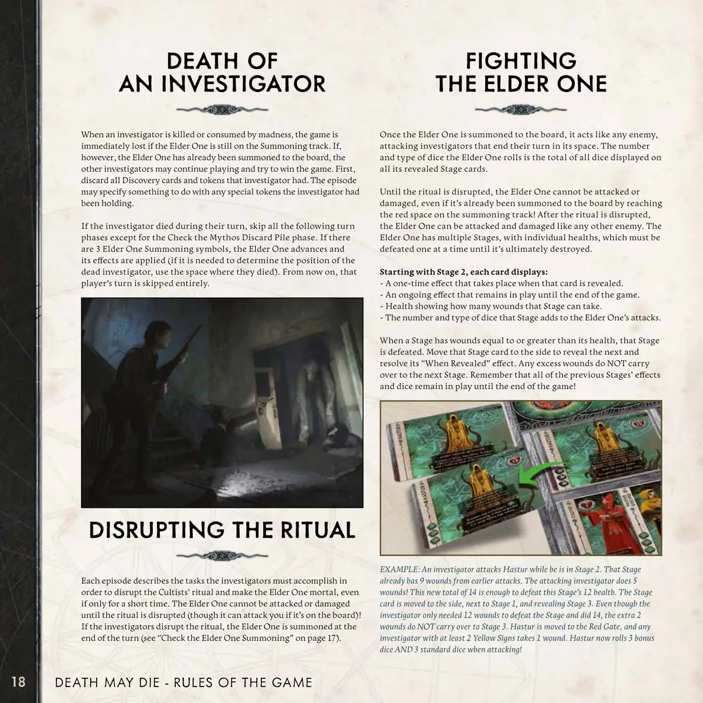
<figcaption>原版规则书 · 第 18 页（点击图片放大）</figcaption>
</figure>

<details class="mt-fold">
<summary>📝 第 18 页 AI 机翻对照（点击展开）</summary>
<div class="mt-body"><h2>死亡亦死 - 游戏规则</h2>

<h2>调查员的</h2>

<h2>死亡</h2>

<p>当调查员被杀害或因疯狂而消耗时，如果古神仍在召唤轨道上，游戏立即失败。然而，如果古神已经被召唤到版图上，其他调查员可以继续游戏并尝试获胜。首先，弃置该调查员拥有的所有发现卡和指示物。章节可能指定对该调查员持有的任何特殊指示物要做些什么。</p>

<p>如果调查员在其回合期间死亡，跳过所有后续回合阶段，检查神话弃牌堆阶段除外。如果有3个古神召唤符号，古神前进并应用其效果（如果需要确定死亡调查员的位置，使用其死亡所在的区域）。从现在开始，该玩家的回合完全被跳过。</p>

<h2>打断仪式</h2>

<p>每个章节描述调查员必须完成的任务，以打断邪教徒的仪式并使古神变得脆弱，即使只是短暂时间。在仪式被打断之前，古神不能被攻击或受到伤害（尽管如果它在版图上，它可以攻击你）！</p>

<p>如果调查员打断了仪式，古神在回合结束时被召唤（参见第17页的"检查古神召唤"）。</p>

<h2>战斗</h2>

<h2>古神</h2>

<p>一旦古神被召唤到版图上，它就像任何敌人一样，攻击在其区域结束回合的调查员。古神投掷的骰子数量和类型是其所有已揭示的阶段卡上显示的所有骰子总数。</p>

<p>在仪式被打断之前，古神不能被攻击或受到伤害，即使它已经通过到达召唤轨道上的红色区域被召唤到版图上！仪式被打断后，古神可以像其他敌人一样被攻击和受到伤害。古神有多个阶段，每个阶段有独立的生命值，必须逐一击败，直到最终被摧毁。</p>

<p>从阶段2开始，每张卡显示：</p>

<ul>
  <li>当该卡被揭示时发生的一次性效果。</li>
  <li>保留在游戏中直到游戏结束的持续效果。</li>
  <li>显示该阶段可以承受多少伤害的生命值。</li>
  <li>该阶段为古神的攻击增加的骰子数量和类型。</li>
</ul>

<p>当一个阶段的伤害等于或大于其生命值时，该阶段被击败。将该阶段卡移到一旁，揭示下一阶段并解决其"揭示时"效果。任何多余的伤害不会 carry over 到下一阶段。记住，所有之前阶段的效果和骰子都保留在游戏中直到游戏结束！</p>

<p>示例：一名调查员攻击处于阶段2的哈斯塔。该阶段</p>

<p>已经从之前的攻击中获得了9点伤害。攻击的调查员造成了5点伤害！这个新的总计14点足以击败这个阶段的12点生命值。阶段卡被移到旁边，放在阶段1旁边，并揭示阶段3。尽管调查员只需要12点伤害就能击败这个阶段，但实际造成了14点，多余的2点伤害不会 carry over 到阶段3。哈斯塔被移到红色之门，任何拥有至少2个黄色符号的调查员获得1点伤害。哈斯塔现在攻击时投掷3个奖励骰子和3个标准骰子！</p></div>
</details>

<figure>
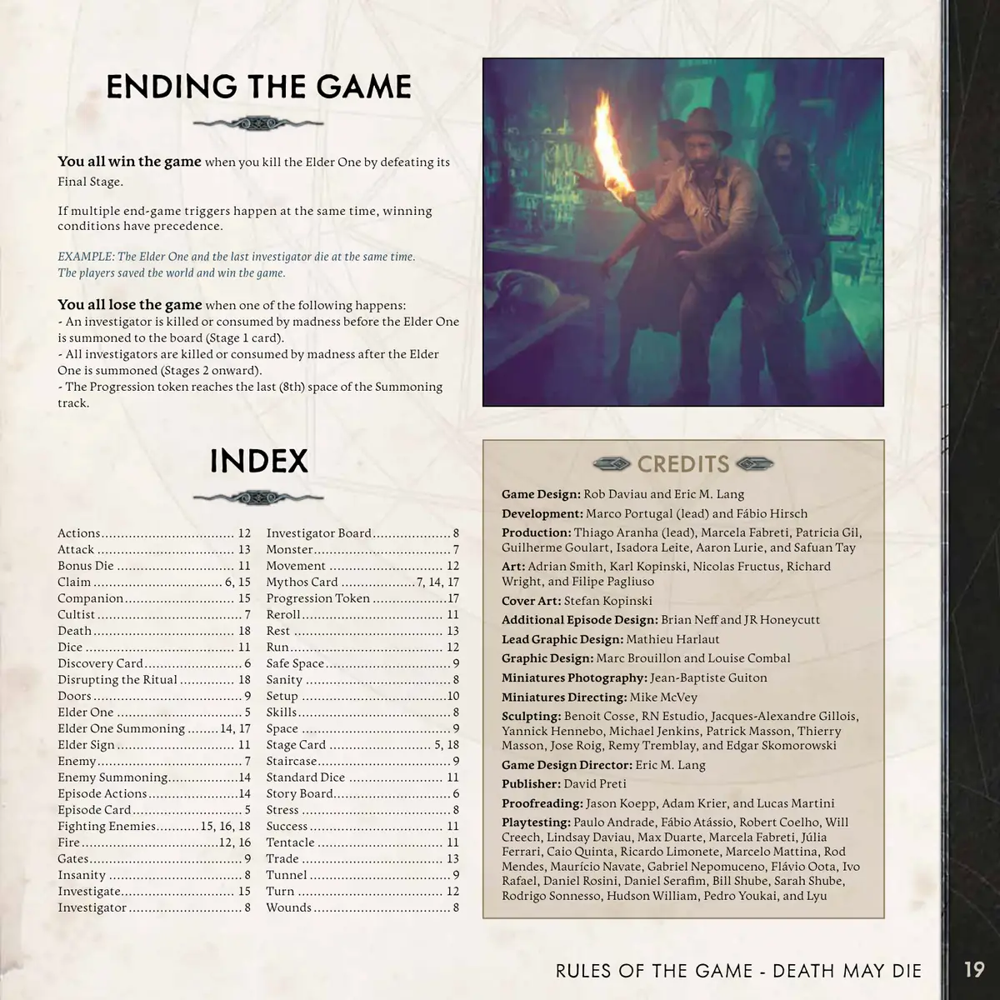
<figcaption>原版规则书 · 第 19 页（点击图片放大）</figcaption>
</figure>

<details class="mt-fold">
<summary>📝 第 19 页 AI 机翻对照（点击展开）</summary>
<div class="mt-body"><h2>游戏规则 - 死亡亦会死亡</h2>

<h2>制作人员</h2>

<p>游戏设计：Rob Daviau 和 Eric M. Lang</p>

<p>开发：Marco Portugal（主管）和 Fábio Hirsch</p>

<p>制作：Thiago Aranha（主管）、Marcela Fabreti、Patricia Gil、</p>

<p>Guilherme Goulart、Isadora Leite、Aaron Lurie 和 Safuan Tay</p>

<p>美术：Adrian Smith、Karl Kopinski、Nicolas Fructus、Richard</p>

<p>Wright 和 Filipe Pagliuso</p>

<p>封面艺术：Stefan Kopinski</p>

<p>额外剧情设计：Brian Neff 和 JR Honeycutt</p>

<p>首席平面设计：Mathieu Harlaut</p>

<p>平面设计：Marc Brouillon 和 Louise Combal</p>

<p>人偶摄影：Jean-Baptiste Guiton</p>

<p>人偶指导：Mike McVey</p>

<p>雕塑：Benoit Cosse、RN Estudio、Jacques-Alexandre Gillois、</p>

<p>Yannick Hennebo、Michael Jenkins、Patrick Masson、Thierry</p>

<p>Masson、Jose Roig、Remy Tremblay 和 Edgar Skomorowski</p>

<p>游戏设计总监：Eric M. Lang</p>

<p>出版商：David Preti</p>

<p>校对：Jason Koepp、Adam Krier 和 Lucas Martini</p>

<p>测试游戏：Paulo Andrade、Fábio Atássio、Robert Coelho、Will</p>

<p>Creech、Lindsay Daviau、Max Duarte、Marcela Fabreti、Júlia</p>

<p>Ferrari、Caio Quinta、Ricardo Limonete、Marcelo Mattina、Rod</p>

<p>Mendes、Maurício Navate、Gabriel Nepomuceno、Flávio Oota、Ivo</p>

<p>Rafael、Daniel Rosini、Daniel Serafim、Bill Shube、Sarah Shube、</p>

<p>Rodrigo Sonnesso、Hudson William、Pedro Youkai 和 Lyu</p>

<h2>索引</h2>

<p>行动.................................. 12</p>

<p>攻击.................................... 13</p>

<p>奖励骰子............................... 11</p>

<p>宣称.................................. 6, 15</p>

<p>同伴. ........................... 15</p>

<p>邪教徒...................................... 7</p>

<p>死亡..................................... 18</p>

<p>骰子....................................... 11</p>

<p>发现卡牌. ........................ 6</p>

<p>破坏仪式............... 18</p>

<p>门....................................... 9</p>

<p>古神................................. 5</p>

<p>古神召唤.........14, 17</p>

<p>古神标记............................... 11</p>

<p>敌人. .................................... 7</p>

<p>敌人召唤..................14</p>

<p>剧情行动. ......................14</p>

<p>剧情卡牌............................. 5</p>

<p>战斗敌人...........15, 16, 18</p>

<p>火....................................12, 16</p>

<p>门....................................... 9</p>

<p>疯狂................................... 8</p>

<p>调查............................. 15</p>

<p>调查员.............................. 8</p>

<p>调查员版图. ................... 8</p>

<p>怪物................................... 7</p>

<p>移动.............................. 12</p>

<p>神话卡牌....................7, 14, 17</p>

<p>进度标记....................17</p>

<p>重掷. ................................... 11</p>

<p>休息....................................... 13</p>

<p>奔跑. ...................................... 12</p>

<p>安全空间. ............................... 9</p>

<p>理智...................................... 8</p>

<p>设置......................................10</p>

<p>技能...................................... 8</p>

<p>太空....................................... 9</p>

<p>阶段卡牌........................... 5, 18</p>

<p>楼梯.................................. 9</p>

<p>标准骰子......................... 11</p>

<p>故事板.............................. 6</p>

<p>压力....................................... 8</p>

<p>成功................................... 11</p>

<p>触手................................. 11</p>

<p>贸易..................................... 13</p>

<p>隧道..................................... 9</p>

<p>回合...................................... 12</p>

<p>伤口.................................... 8</p>

<h2>游戏结束</h2>

<p>当你们通过击败古神的最终阶段杀死古神时，你们就赢得了游戏。</p>

<p>如果多个游戏结束触发器同时发生，获胜条件优先。</p>

<p>示例：古神和最后一位调查员同时死亡。玩家们拯救了世界并赢得了游戏。</p>

<p>当发生以下任一情况时，你们就输掉了游戏：</p>

<ul>
  <li>在古神被召唤到版图上（第1阶段卡牌）之前，一位调查员被杀死或因疯狂而被吞噬。</li>
  <li>在古神被召唤后（第2阶段及以后），所有调查员都被杀死或因疯狂而被吞噬。</li>
  <li>进度指示物到达召唤轨道的最后一个（第8个）格。</li>
</ul></div>
</details>

<figure>
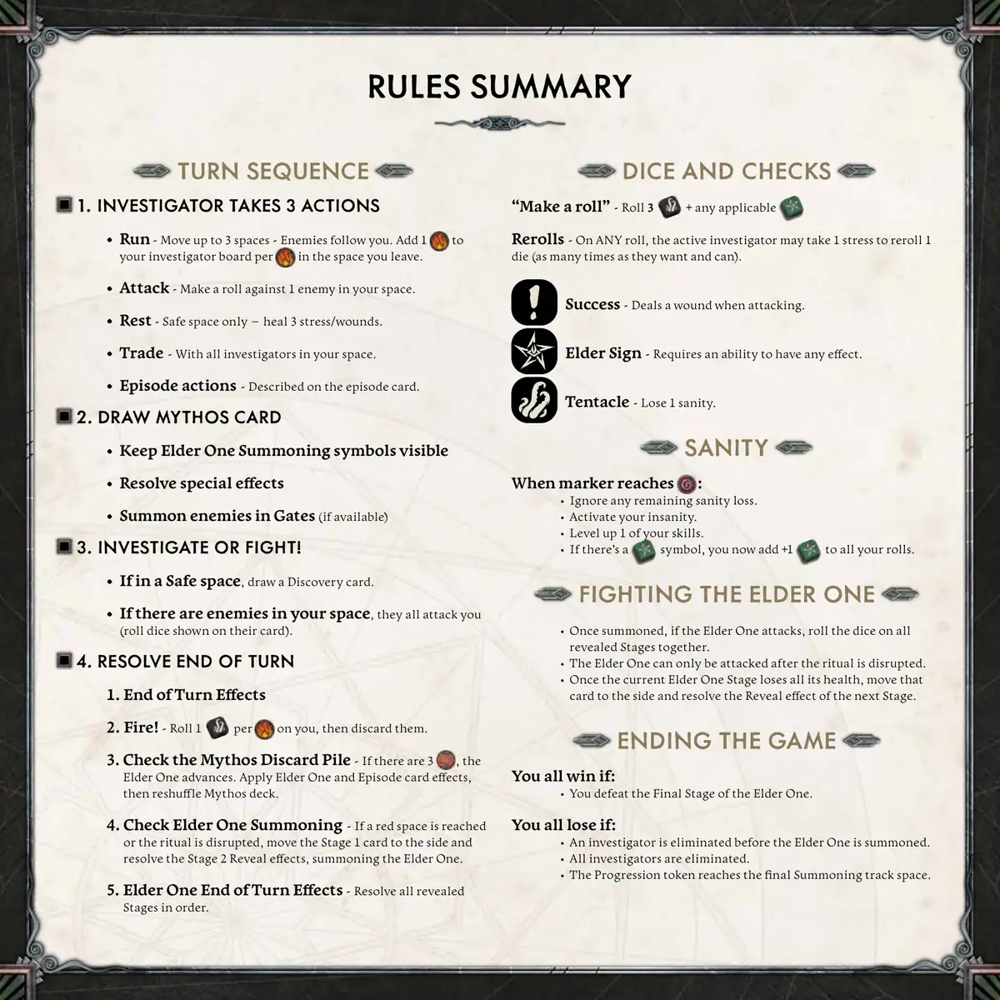
<figcaption>原版规则书 · 第 20 页（点击图片放大）</figcaption>
</figure>

<details class="mt-fold">
<summary>📝 第 20 页 AI 机翻对照（点击展开）</summary>
<div class="mt-body"><h2>回合顺序</h2>

<h2>1. 调查员执行3个行动</h2>

<p>• 奔跑 - 最多移动3个格 - 敌人会跟随你。在你离开的每个格中，在你的调查员版图上增加1个</p>

<p>。</p>

<p>• 攻击 - 对你所在格中的1个敌人进行一次检定。</p>

<p>• 休息 - 仅限安全格 - 治愈3点压力/创伤。</p>

<p>• 交易 - 与你所在格中的所有调查员。</p>

<p>• 剧集行动 - 在剧集卡牌上描述。</p>

<h2>2. 摸取神话牌</h2>

<p>• 保持古神召唤符号可见</p>

<p>• 解析特殊效果</p>

<p>• 在传送门中召唤敌人（如果可用）</p>

<ol>
  <li>调查或战斗！</li>
</ol>

<p>• 如果在安全格中，摸取一张发现牌。</p>

<p>• 如果你的空间中有敌人，他们会全部攻击你（掷出他们卡牌上显示的骰子）。</p>

<h2>4. 解析回合结束</h2>

<h3>1. 回合结束效果</h3>

<ol>
  <li>火！ - 对你身上的每个</li>
</ol>

<p>掷1个</p>

<p>，然后弃掉它们。</p>

<ol>
  <li>检查神话弃牌堆 - 如果有3个</li>
</ol>

<p>，古神前进。应用古神和剧集卡牌效果，然后重新洗混神话牌库。</p>

<ol>
  <li>检查古神召唤 - 如果到达红色格或仪式被中断，将第1阶段卡牌移到一边，解析第2阶段揭示效果，召唤古神。</li>
  <li>古神回合结束效果 - 按顺序解析所有已揭示的阶段。</li>
</ol>

<h2>骰子与检定</h2>

<p>"进行一次检定" - 掷3个</p>

<p>+ 任何适用的</p>

<p>重掷 - 在任何检定时，当前调查员可以承受1点压力来重掷1个</p>

<p>骰子（次数不限，只要他们愿意且可以）。</p>

<p>成功 - 攻击时造成1点创伤。</p>

<p>古神印记 - 需要能力才能有任何效果。</p>

<p>触手 - 失去1点理智。</p>

<h2>理智</h2>

<p>当标记到达</p>

<p>时：</p>

<p>• 忽略任何剩余的理智损失。</p>

<p>• 激活你的疯狂。</p>

<p>• 提升1项你的技能1级。</p>

<p>• 如果有</p>

<p>符号，你现在在所有检定中增加+1</p>

<p>。</p>

<h2>对抗古神</h2>

<p>• 一旦被召唤，如果古神攻击，将所有已揭示阶段的骰子一起掷出。</p>

<p>• 仪式被中断后才能攻击古神。</p>

<p>• 　当当前古神阶段失去所有生命值时，将该卡牌移到一边，解析下一阶段的揭示效果。</p>

<h2>游戏结束</h2>

<p>如果以下情况，你们所有人获胜：</p>

<p>• 你们击败了古神的最终阶段。</p>

<p>如果以下情况，你们所有人失败：</p>

<p>• 在古神被召唤前，一名调查员被淘汰。</p>

<p>• 所有调查员被淘汰。</p>

<p>• 进度指示物到达最终召唤轨道的最后格。</p>

<h2>规则摘要</h2></div>
</details>
        </div>

        <footer class="source-note">
<p>来源：<a href="https://resources.cmon.com/DMD_Rulebook_web.pdf" target="_blank" rel="noopener">CMON 官方资源站</a>（2019 DMD_Rulebook_web.pdf）· 译文仅供个人学习查阅，规则内容归 CMON 及版权方所有 · 原文版權與商标归原出版方。</p>
</footer>
      </article>
    </main>
  </div>

  <button class="to-top" aria-label="返回顶部" data-i18n-aria="backTop">↑</button>
  <script src="../assets/js/i18n.js"></script>
  <script src="../assets/js/main.js"></script>
</body>
</html>
